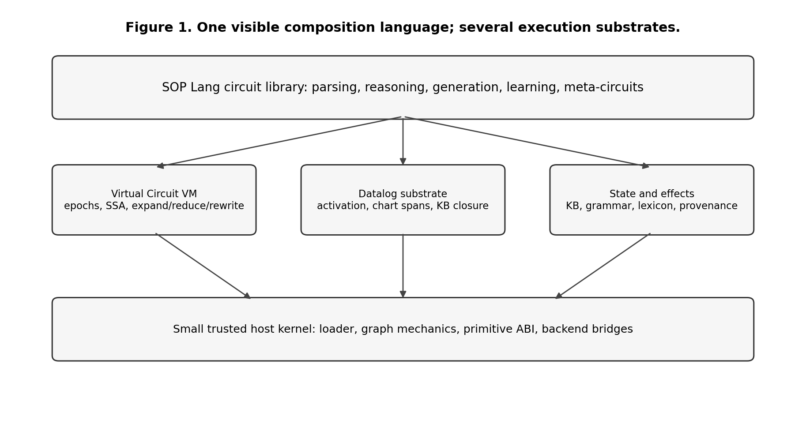
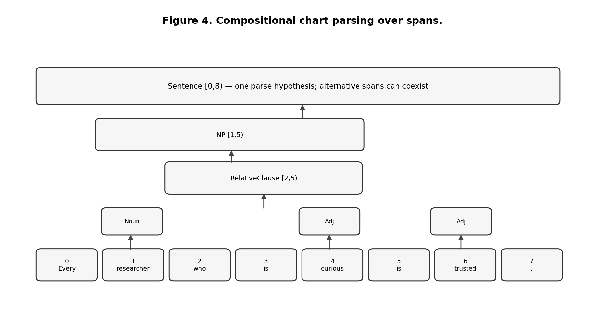
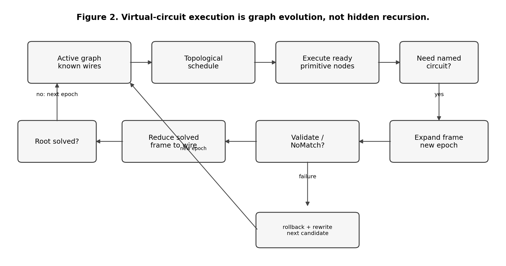
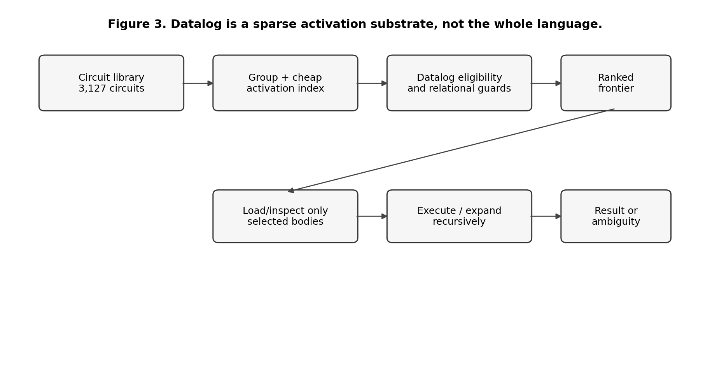
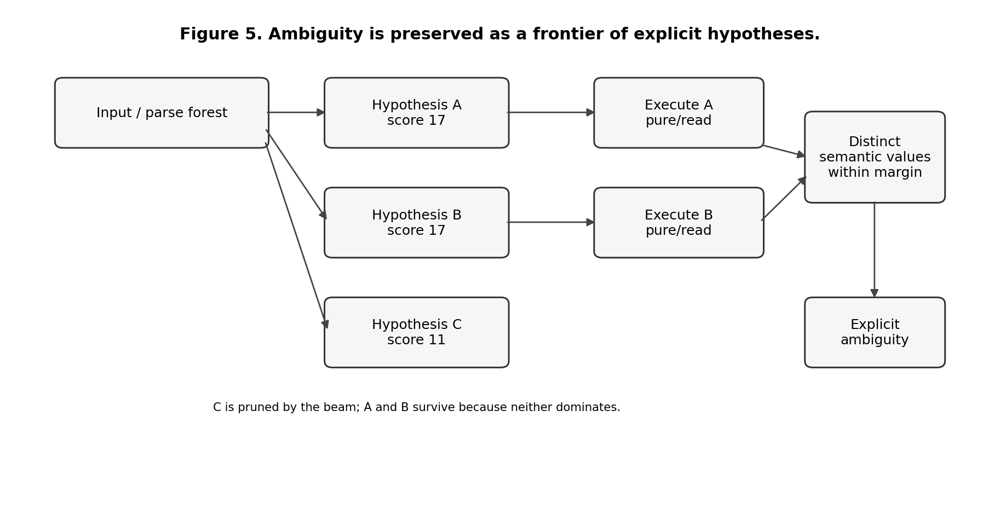
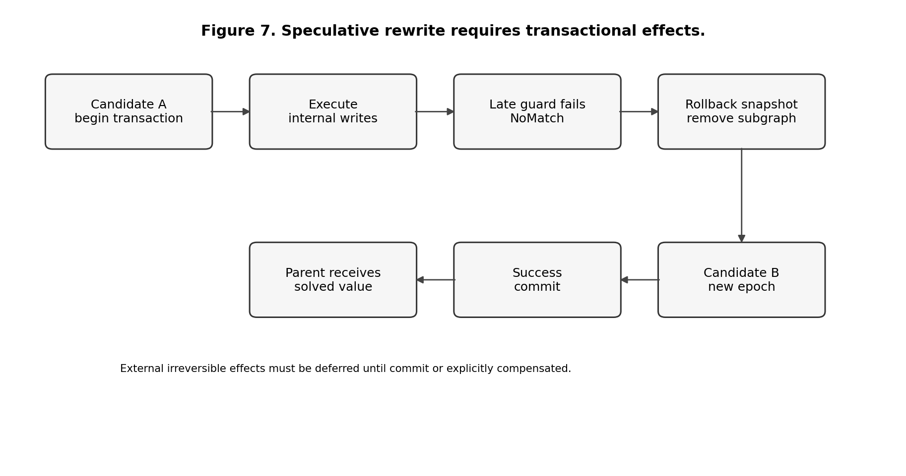
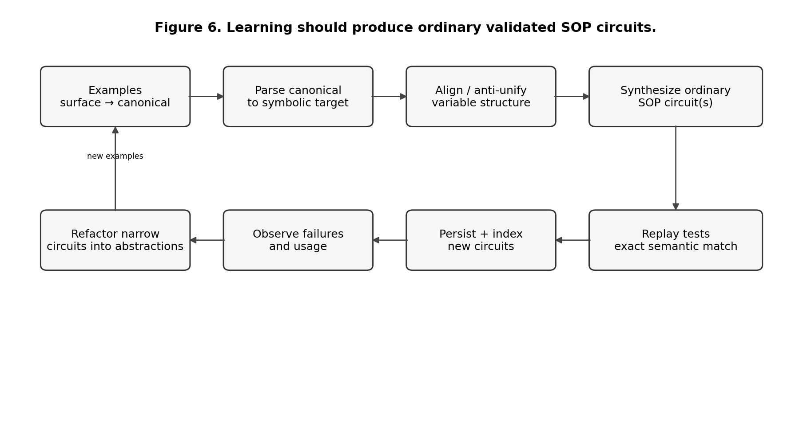
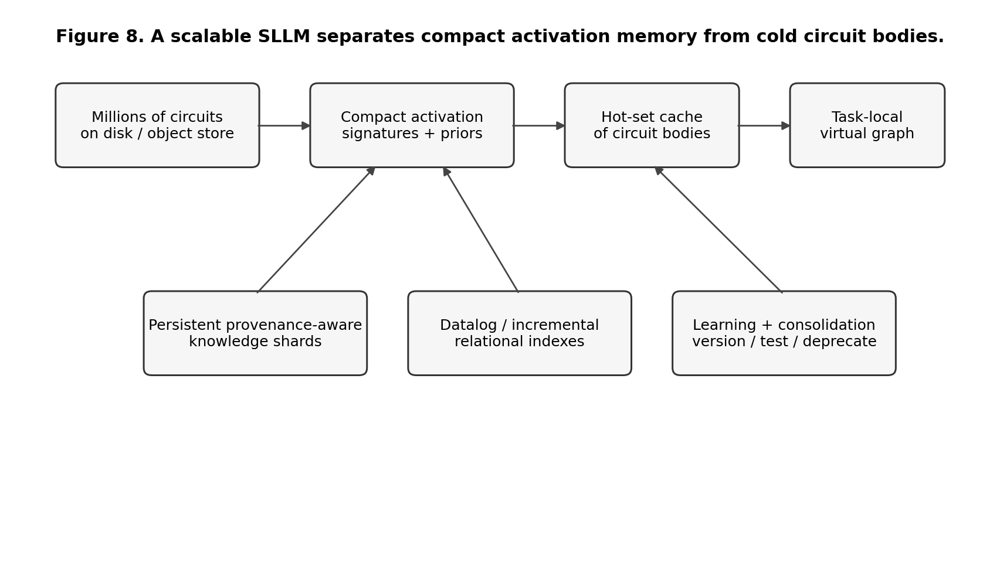

Semantic circuits as a symbolic language model
Chapter index · 51 sections
- Reading this edition
- Preface
- Part I. The Problem and the Design Discipline
- 1. What We Are Trying to Build
- 2. The One-Language Rule
- 3. Engineering Foundations
- 4. A Precise Model of a SOP Circuit
- Part II. Execution Architecture
- 5. The Virtual Circuit Machine
- 6. Datalog as a Relational Substrate
- 7. Compositional CNL Parsing
- 8. Ambiguity, Search, and Parallel Speculation
- 9. Knowledge, Inference, and Provenance
- 10. Transactions, Effects, and Safe Rewrite
- 11. Symbolic Generation and Reflection
- 12. Learning by Inducing Circuits
- Part III. Current Implementation and Validation
- 13. The Current Executable System
- 14. Scale and Observable Behavior
- 15. What the tests prove and what they do not
- Part IV. The Remaining Research Program
- 16. Semantic Depth: What Better Circuit Libraries Must Represent
- 17. Scaling Search and Long-Term Circuit Memory
- 18. Learning at Scale
- 19. Meta-Programming, Rewrite, and E-Graphs
- 20. Alternative Backends and Why They Should Remain Replaceable
- 21. A Falsifiable Experimental Roadmap
- 22. Final Assessment
- Part V. Detailed Engineering Specification
- 23. A Complete End-to-End Execution Walkthrough
- 24. Designing a Broad CNL Without Pretending It Is English
- 25. System Invariants and Acceptance Checks
- 26. Engineering a Production-Scale Runtime
- 27. Research Hypotheses to Keep Separate
- Appendix A. Core Algorithms in Pseudocode
- Appendix B. SOP Idioms
- Appendix C. Datalog Patterns Relevant to sdlm
- Appendix D. Benchmark and Measurement Matrix
- Appendix E. Terminology
- Appendix F. Research sources
- Appendix G. Reproducibility
- 28. CLI
- 29. Text API
- 30. Sessions and reusable state
- 31. Learning and circuit packs
- 32. Validation and audit
- 33. Assumptions and correction
- 34. Elementary knowledge
- 35. Elementary evaluation
- 36. Response style
- 37. Everyday conversation
Reading this edition
The HTML edition provides a linked chapter index. Chapters 1 through 27 explain the research architecture; the operational chapters after Appendix G are generated from the current CLI, API, session, learning, validation and assumption guides. The canonical specifications define supported contracts where research proposals discuss broader possibilities.
Preface
This book describes the current sdlm architecture and executable reference implementation. The central question is whether useful language competence can be represented primarily as executable semantic circuits rather than being concentrated inside one opaque monolithic model. The technical name is sd_lm, displayed as sdlm. The first letter means Symbolic, Small or Specific, d means Datalog, and lm means Language Model. SOP Lang is the single visible authoring and composition language. Datalog is used as a relational reasoning and circuit-activation substrate. JavaScript provides the small trusted runtime needed to load circuits, manage graph execution, enforce effects and transactions, and bridge to specialized backends.
The purpose of the book is not to claim that the system is a general language model. It is not. The purpose is to specify the architecture precisely enough that a software engineer can implement it, test it, extend it, measure it, and falsify its central hypotheses. The normative contracts and executable validation guide distinguish implemented behavior from proposed mechanisms. Proposed mechanisms are labeled as proposals. Open research questions are separated from tested behavior.
The generated inventory below records the current circuit and runtime source counts. The validation chapter gives repeatable commands for both supported backends. These counts are engineering observations, not evidence of general intelligence.
| Source inventory, version 0.7.0 | Count |
|---|---|
| Base and extension SOP files | 3531 |
| Generated micro-circuits | 2918 |
| SOP source lines | 116059 |
| Runtime modules | 51 |
| Runtime JavaScript lines | 4384 |
The central architectural claim is deliberately narrow and falsifiable:
A small generic runtime can operate a large and growing library of executable semantic circuits, select relevant circuits from state, compose them recursively into a task-local virtual circuit, reason over explicit symbolic knowledge, preserve ambiguity, rewrite failed interpretations safely, and improve by adding or inducing new circuits while the trusted runtime remains comparatively stable.
The design follows a strict one-language rule. Ordinary competence must be expressed as SOP circuits and typed data. Datalog, internal graph IR, indexes, and backend-specific structures may exist behind implementation boundaries, but ordinary circuit authors and learning agents should not need secondary ad-hoc DSLs. The repository contains regression tests that enforce this boundary.
The book distinguishes four categories. Implemented mechanism means executable code covered by tests. Design means a specified mechanism whose implementation may still be incomplete. Hypothesis means a claim to be tested experimentally. Research direction means a plausible extension that has not yet earned stronger status. This distinction prevents architectural names from being mistaken for demonstrated capability.
The intended reader needs ordinary undergraduate-level programming knowledge. The required graph, database, parsing, search, and transaction concepts are introduced from first principles. Mathematics is used only where it makes an algorithm or invariant more precise. Pseudocode and simple diagrams are preferred when notation would add no engineering value.
Part I. The Problem and the Design Discipline
1. What We Are Trying to Build
1.1 From a language parser to a symbolic language model
A conventional symbolic natural-language system is often organized as a pipeline: tokenize text, parse syntax, construct semantics, run a reasoner, then generate an answer. That architecture is useful, but it tends to freeze the boundaries between components. The parser is implemented as a parser, the rule engine as a rule engine, and the generator as a generator. Extending the system often means extending several unrelated subsystems.
The sdlm experiment starts from a different abstraction. A circuit is a named executable graph that consumes values and produces values. A circuit may parse a phrase, infer a relation, decide which other circuit to try, query the knowledge base, produce a response plan, or inspect an earlier execution trace. These roles are not separate syntactic categories. They are ordinary circuits composed from other circuits and a small set of primitives.
This gives a different mental model. Instead of asking "which parser function handles this sentence?", the runtime repeatedly asks "given the state I have now, which circuits are plausible next expansions?" The active computation is not known in advance. It is constructed incrementally.

The long-term ambition is not merely to create a controlled-language rule engine. It is to test whether language competence can be represented as an evolving body of reusable executable knowledge. In that view, vocabulary, grammar, semantic interpretation, reasoning patterns, response plans, domain strategies, validation rules, and meta-reasoning strategies may all be learned as circuits. The runtime is closer to a virtual machine than to a linguistic model.
1.2 What the word "model" means here
The phrase language model usually refers today to a statistical model that assigns probabilities to token sequences or generates language from learned parameters. sdlm uses the term differently. Its "model" is the combination of a circuit library, persistent knowledge circuits, materialized symbolic reasoning state, activation indexes, and explicit execution state. The system models language behavior by selecting and composing executable structures rather than by evaluating one dense parameter tensor.
This distinction does not imply that symbolic is inherently superior to neural. Neural models have enormous strengths in perception, fuzzy matching, broad coverage, and fluent generation. The experiment asks whether some capabilities that are difficult to inspect, update, constrain, or prove in neural systems can be made explicit in a circuit-based model. It also leaves open a hybrid architecture in which neural components propose circuits, rank hypotheses, acquire knowledge, or realize prose while symbolic circuits preserve execution, provenance, and validation boundaries.
1.3 Success criteria
The experiment needs stronger criteria than "the demo answers a few questions." A useful architecture should show several properties together.
First, kernel stability: adding ordinary language phenomena should usually add SOP circuits or declarative knowledge rather than JavaScript branches. Second, compositionality: longer structures should reuse shorter structures rather than require one template for every length. Third, sparse activation: a library of thousands or millions of circuits should not require trying them all. Fourth, explicit uncertainty: ambiguous or unsupported interpretations should remain ambiguous or unknown rather than silently becoming a confident answer. Fifth, safe rewrite: speculative interpretations must not leak side effects. Sixth, inspectable learning: new competence should become ordinary circuits and tests, not an opaque side store. Seventh, falsifiability: benchmark failures must tell us whether the limitation lies in representation, search, learning, scaling, or the fundamental circuit hypothesis.
These criteria are stricter than producing good-looking natural language. They are meant to determine whether the architecture remains coherent as it grows.
2. The One-Language Rule
2.1 Why the circuit abstraction exists
SOP Lang exists to provide one reusable abstraction for computation that would otherwise be fragmented across parsers, rule engines, planners, generators, and meta-programs. A circuit is a named executable graph with explicit inputs, nodes, dependencies, and outputs. A parser is a circuit. An executor is a circuit. A response planner is a circuit. A circuit selector is a circuit. A reflection or learning procedure may also be represented as a circuit when its operations can be expressed through existing primitives.
A minimal example is:
@input command
@executors selectCircuits
group "executor"
value $command
@answer callCandidates
candidates $executors
command $command
@output result $answer
The author-facing concepts are intentionally few: inputs, named nodes, references to earlier wires, circuit calls, primitive calls, and outputs. Groups, indexes, compiled Datalog projections, and runtime frames are implementation mechanisms rather than additional languages.
2.2 The authoring boundary
The architectural rule is:
Ordinary language, reasoning, generation, and learned competence are authored as SOP circuits plus typed data.
The trusted kernel may implement primitives such as tokenization, graph operations, KB access, Datalog evaluation, transaction snapshots, and string concatenation. These primitives form a machine ABI. They are allowed because some bootstrap semantics must ultimately be implemented in a host language. What is not allowed is a growing host-language vocabulary that mirrors linguistic categories, grammar rules, response templates, or domain predicates.
This gives a practical audit criterion. Adding a new verb, clause form, reasoning pattern, or response strategy should normally add or modify SOP files and tests. If ordinary competence repeatedly requires new JavaScript branches, new delimiter conventions, or another author-facing syntax, the architecture is failing its own abstraction boundary.
2.3 Generic relational lowering for activation
Datalog helps select candidate circuits, but the selector must not know a privileged list of linguistic guard names. Instead, a primitive may declare a conservative relational projection next to its trusted implementation metadata. For example, a primitive that checks a token at a position may expose a projection stating that a candidate requires an observation of the form (token-position, index, value). A primitive that has no safe cheap projection remains fully usable; it simply contributes no pre-expansion filter.
The selector operates generically:
ordinary SOP circuit
↓
inspect primitive metadata
↓
collect conservative activation requirements
↓
activation index removes structurally impossible candidates
↓
Datalog validates and ranks the remaining candidate relations
↓
selected SOP circuits are expanded normally
The runtime guards remain the semantic authority. The activation projection is only an optimization and ranking aid. Therefore it may admit extra candidates, but it must not reject a candidate that could succeed.
A stronger compiler may later derive projections automatically from arbitrary pure relational SOP fragments using backward slicing, abstract interpretation, or partial evaluation. That is a research direction; the current implementation uses primitive-local declarative projections consumed through a generic interface.
2.4 Grammar symbols are typed data
Grammar productions need to distinguish literal terminals from grammar categories. This distinction is represented explicitly as typed values rather than by packing meaning into string prefixes.
Conceptually:
Terminal("if")
Category("Atom")
Category("ConditionList")
SOP grammar-installation circuits construct these values through ordinary primitives. The chart parser consumes the typed structures. A learning procedure that synthesizes grammar rules produces the same values. No private grammar-string convention is required.
Typed data makes the representation safer and easier to inspect. It also leaves room for extensions such as lexical classes, feature structures, namespaces, weights, and provenance without inventing new delimiters.
2.5 Natural-language realization is circuit composition
Generation follows the same rule. There is no separate interpolation language for response templates. Atom realization is a circuit-selection problem. RealizeAtom selects an appropriate realizer circuit, which inspects structured fields such as predicate, arguments, polarity, qualifier, and lexical information. The circuit composes text using ordinary operations such as concat, join, and recursive realization of substructures.
A summary, comparison, explanation, or reflection response is likewise an ordinary SOP circuit. This makes generation knowledge subject to the same tracing, testing, selection, learning, effect analysis, and rewrite mechanisms as parsing and reasoning.
The current generator is deliberately symbolic and relatively constrained. Its architectural significance is not literary quality; it demonstrates that multi-sentence answers do not require a second semantic language inside the host runtime.
2.6 Semantic structure uses explicit fields
Structured meaning must not be encoded inside names when it can be represented directly. A modal atom, for example, is represented conceptually as:
predicate = "help"
qualifier = "can"
arguments = [alice, bob]
polarity = positive
The same principle applies to tense, source, confidence, provenance, namespace, and other attributes as the semantic representation grows. Explicit fields are not automatically a complete theory of modality or time, but they keep the representation open to principled extension and prevent parsers from depending on private string conventions.
2.7 Primitive-local semantics and effect metadata
Each primitive has a trusted implementation and may expose metadata describing properties needed by generic runtime services. Examples include:
effect = pure | read | transactional-write | external
activationProjection = optional conservative relational projection
resultKind = optional structural type information
The effect analyzer consumes effect metadata generically. The activation system consumes activation metadata generically. No subsystem should maintain a second list keyed by primitive names for the same semantic property.
This is a general design rule: semantic properties belong with the object whose semantics they describe. Central registries may index those properties, but they should not redefine them independently.
2.8 Internal representations are allowed
One visible language does not mean one internal representation. A compiler or runtime may transform SOP into an AST, an SSA graph, typed grammar values, Datalog relations, indexes, bytecode, SQL, or an e-graph. These are execution forms behind controlled boundaries.
They become architectural problems only when normal authors or learning agents must coordinate an additional ad-hoc syntax to express ordinary competence. The useful distinction is therefore not "SOP versus all other data structures." It is authoring semantics versus implementation representation.
The trusted kernel is allowed to contain a small explicit set of VM structural operations such as circuit call, candidate call, expansion, reduction, transaction handling, and backend invocation. These operations should remain small, documented, and regression-tested. They should not grow in proportion to English vocabulary, grammar coverage, or domain knowledge.
3. Engineering Foundations
This chapter defines the basic theories used by the current implementation. The goal is not to teach a full course in compilers, databases, or formal languages. It is to establish exactly what each concept contributes to the sdlm design.
3.1 Directed graphs and dependency graphs
A directed graph contains vertices and directed edges. In a circuit, a vertex is usually an operation and an edge means that one operation needs a value produced by another. If node B consumes $a, produced by node A, there is a dependency edge from A to B.
A graph is a DAG, a directed acyclic graph, if no path returns to its starting node. A DAG has at least one topological ordering: an ordering of nodes in which every dependency appears before the node that consumes it. Standard topological sorting takes time proportional to the number of vertices plus edges.
SOP circuits use this idea because textual order should not be the execution semantics. Independent nodes may execute in either order or in parallel. The data dependencies determine readiness.
3.2 Static single assignment
SSA, static single assignment, is a representation in which each named variable or wire is assigned once. In SOP, a node name acts as a wire name. If @tokens produces a token list, later nodes refer to $tokens; another node may not redefine @tokens in the same frame.
SSA has two practical advantages. First, dependencies are explicit. Second, a value has a stable provenance: $tokens always means the output of one node. Dynamic circuit expansion still creates new frames and globally unique node identities, but inside each frame the single-assignment discipline remains simple.
3.3 Dataflow execution
In imperative code, the program counter often determines what runs next. In dataflow execution, a node runs when all required inputs are available. This matches circuit semantics directly.
A minimal scheduler is:
while unresolved nodes exist:
ready = nodes whose dependencies are solved
execute ready primitive nodes
if a node expands to a subcircuit:
modify graph
restart scheduling
The sdlm adds expansion, reduction and rewrite as structural operations, so the graph itself changes during execution.
3.4 Fixed points
Many reasoning procedures repeatedly apply rules until nothing new can be derived. The stable state is called a fixed point.
Suppose F(S) means "apply all rules once to a set of facts S." Starting with the explicit facts S0, compute:
S1 = F(S0)
S2 = F(S1)
S3 = F(S2)
...
When Sk+1 = Sk, the process has reached a fixed point. Datalog evaluation is typically organized around this idea. The important engineering question is not the notation but whether the rules are monotone and whether the domain is finite enough to guarantee termination.
3.5 Datalog in one page
Datalog is a rule language derived from logic programming and relational databases. It uses facts and rules. A familiar example is reachability:
edge(alice, bob).
edge(bob, carol).
reachable(X, Y) :- edge(X, Y).
reachable(X, Z) :- edge(X, Y), reachable(Y, Z).
The first rule copies direct edges into reachability. The second makes reachability transitive. A Datalog engine evaluates these rules until the relation stops changing.
Datalog is attractive for sdlm because several core problems are naturally relational: which chart spans exist, which claims depend on which sources, which circuits have activation conditions satisfied, which facts follow from which rules, and which conclusions are affected by a retraction.
A standard optimization is semi-naive evaluation. Instead of recomputing every rule against every old fact at every iteration, the engine focuses on facts newly derived in the previous round. This is the database analogue of incremental work-list processing and is one reason Datalog can be a practical substrate rather than merely a declarative notation. Modern Datalog systems also use indexes and specialized join strategies.
Datalog is deliberately not made the universal SOP execution language. Calling an HTTP service, summarizing a document, invoking a neural model, writing a file, or performing a transactional external action does not naturally belong in plain Datalog.
3.6 Context-free grammars and chart parsing
A context-free grammar describes how categories can be composed. A tiny grammar might say:
Sentence -> NounPhrase VerbPhrase
NounPhrase -> Determiner Noun
VerbPhrase -> Verb NounPhrase
A naive parser can repeatedly retry the same substrings. A chart parser stores partial results for spans of the input. A span is described by a start position, end position, and category. If tokens 1 through 3 form a NounPhrase, that result can be reused wherever a larger production needs such a phrase.
Earley's classic general context-free parsing algorithm and CKY-style dynamic programming both embody this reuse. General Earley parsing has cubic worst-case time in sentence length, with better behavior for many practical grammar classes. The exact algorithm in the current implementation is simpler than a production Earley parser, but the design idea is the same: materialize constituent spans to a fixed point, then construct one or more parse trees from the shared chart.

A parse forest compactly represents multiple parses that share substructure. This is essential because natural language is often ambiguous. A parser that destroys alternatives too early makes semantic recovery impossible later.
3.7 Search, ranking, and beam search
Once several circuits or parses are plausible, interpretation becomes a search problem. A hypothesis is one candidate state: for example a parse tree paired with a semantic circuit and a score. Expanding a hypothesis creates children. Exhaustively exploring every branch is often infeasible.
Beam search keeps only the best B hypotheses after each stage. The beam width B bounds work but may discard the correct interpretation. This is an engineering trade-off, not a logical theorem. sdlm therefore needs to measure how often the correct interpretation falls out of the beam and whether ambiguity margins are calibrated.
3.8 Transactions and effects
A transaction groups state changes so they can be committed together or rolled back together. Database transactions make this idea familiar, but it is equally important for speculative symbolic execution.
Suppose candidate interpretation A adds a fact, extends the lexicon, then fails a later guard. If candidate B is tried next, A's changes must not remain. The correct behavior is:
begin candidate A
perform reversible internal changes
later discover NoMatch
rollback A
begin candidate B
...
This works for snapshot-able internal stores. It does not magically undo an email, payment, or irreversible network operation. For external effects, a production runtime needs effect classes such as deferred-until-commit, compensatable, and irreversible.
3.9 Provenance
Provenance records where a result came from. For a derived fact, provenance can identify the rule and supporting facts. A proof tree can then be reconstructed. Provenance is valuable for explanation, debugging, invalidation, and learning from failures.
Database theory has developed algebraic provenance models, including semiring provenance, which show how annotations can be propagated through relational computation. The implementation reconstructs bounded proof trees from current facts and rules. It does not record a source-aware witness at derivation time. The broader theory suggests a path toward combining source identity and derivation structure GREEN-2007.
3.10 Four-valued epistemic status
A rule engine should not confuse "I cannot derive P" with "P is false." The current implementation tracks positive and negative support separately. This yields four states:
| Evidence state | Interpretation |
|---|---|
| positive only | supported / true in the current KB |
| negative only | refuted / false in the current KB |
| both | contradictory support |
| neither | unknown |
This is not a complete epistemic logic. It is a practical minimum that prevents a closed-world assumption from silently turning missing knowledge into negation.
3.11 Dynamic programming, memoization, and packed structure
Several parts of the architecture reuse computed structure rather than recompute it. Chart parsing memoizes spans. Datalog materializes derived relations. Candidate indexes precompute cheap activation signatures. A future sdlm should exploit this much more aggressively because recursive circuit search can otherwise explode combinatorially.
The general engineering pattern is simple: if many candidate computations share a subproblem, represent the subproblem once and let hypotheses refer to it. Parse forests, e-graphs, DAGs, and relational materializations are all variations of this idea.
4. A Precise Model of a SOP Circuit
4.1 Circuit structure
For engineering purposes, a circuit can be modeled as a directed graph with a name, a set of input ports, operation nodes, and output ports. Each operation node contains a command name and named arguments. An argument is either a literal value or a reference to an input or earlier wire.
We can describe a circuit as:
Circuit = {
name,
inputs,
nodes,
outputs
}
Node = {
wireName,
command,
arguments
}
No deeper notation is required. The important invariants are that wire names are unique within a frame, references resolve, and execution follows dependencies.
4.2 Primitive versus circuit
A primitive crosses the bootstrap boundary. Its implementation is supplied by the trusted runtime or a backend. Examples include tokenization, adding a Datalog fact, opening a transaction, or loading a circuit body.
A circuit is defined in SOP by composing primitives and other circuits. This should be the default. New primitives are justified only when they represent a stable universal operation, a system boundary, an effect that must be centrally controlled, or something whose expression in existing circuits would be unreasonable.
This criterion prevents the primitive set from becoming a graveyard of language special cases.
4.3 Circuit values and commands as data
A circuit can construct a value that describes an intended action without performing the action. This separation is crucial for safe ambiguity handling. A parser can produce:
{
kind: "assertFact",
payload: ...
}
without writing the KB. Only after interpretation has committed does an executor circuit consume the command value and invoke the effectful primitive.
This is similar to building an AST before executing it. The difference is that the construction and execution stages are both ordinary SOP circuits.
4.4 Circuits as first-class future data
The current implementation loads circuit definitions into host data structures but does not yet fully expose circuits as ordinary manipulable values inside SOP. A stronger self-describing system should be able to inspect a circuit graph, query its dependencies, generate a modified circuit, validate it, and install it through ordinary meta-circuits.
That is a future step toward true meta-programming. It should not require a new meta-language. The circuit graph itself becomes data, and meta-circuits transform that data.
Part II. Execution Architecture
5. The Virtual Circuit Machine
5.1 Why ordinary function calls are not enough
A trivial implementation could map every circuit to a JavaScript function and recursively call functions. Such a system might produce the same answers, but it would not test the intended architecture. Expansion, rewrite, introspection, caching, parallel scheduling, and provenance would remain hidden in the host call stack.
The runtime therefore materializes an active virtual circuit: a task-local graph that changes during execution.

5.2 Frames
Invoking a named circuit creates a frame. The frame contains the circuit's local nodes, binds its input values, and gives local wire names globally unique identities. A parent call node points to the child frame until the child finishes.
When every required node in the child is solved, the frame reduces. Its internal nodes disappear from the active graph and the parent call node becomes a solved wire carrying the output value.
This gives the operational duality:
one call node
→ expanded subgraph
→ evaluated subgraph
→ one solved wire
5.3 Epochs
An epoch is one stable scheduling period. A topological order is valid only while the graph structure is unchanged. Expanding or rewriting a circuit changes dependencies, so the VM starts a new epoch and recomputes scheduling.
A simplified algorithm is:
function run(rootCircuit, inputs):
graph = instantiate(rootCircuit, inputs)
while not rootSolved(graph):
reduceCompletedFrames(graph)
order = topologicalSort(pendingNodes(graph))
changed = false
for node in order:
if dependenciesSolved(node):
if node.command is primitive:
node.value = executePrimitive(node)
node.status = solved
else:
expandNamedCircuit(node)
changed = true
break
if changed:
continue // new epoch
if no progress:
report cycle, unresolved reference, or failed hypothesis
return rootValue(graph)
Actual candidate search adds transactions and rewrite, but this captures the core.
5.4 Reduction as computation compression
Reduction is more than memory cleanup. It creates a useful abstraction boundary. A potentially large internal reasoning process becomes one stable value in its parent circuit. The current task therefore contains only the parts of long-term circuit knowledge that have been materialized and not yet reduced.
This supports the broader sdlm idea that millions of long-term circuits need not exist simultaneously in the active computation.
5.5 Rewrite
A circuit node may select several candidates. Candidate A may pass cheap activation conditions and still fail after deeper expansion. Instead of restarting the whole request, the VM rolls back candidate A's speculative state, removes its subgraph, substitutes candidate B at the call node, and begins a new epoch.
Rewrite therefore means structural revision of the active graph, not merely an if statement hidden inside a parser.
5.6 Termination and budgets
Dynamic expansion introduces new failure modes. A circuit could recursively call itself without progress; a rewrite cycle could alternate forever; a parse forest could grow beyond practical bounds. The VM enforces configurable step, active-node, token, text-length and cooperative time budgets. Parse search also bounds retained alternatives. The default runtime limits are listed below. More detailed rewrite and depth accounting remains an extension.
| Runtime option | Default |
|---|---|
maxSteps |
100000 |
maxActiveNodes |
10000 |
maxTokens |
128 |
maxInputLength |
8192 |
timeoutMs |
10000 |
A budget error reports the exhausted limit, restores symbolic state, and permits a later operation. Time checks cannot interrupt a blocking synchronous backend call. Silent truncation would make symbolic explanations misleading.
6. Datalog as a Relational Substrate
6.1 Two independent uses
The implementation uses Datalog for two logically different purposes.
The semantic knowledge database contains facts and rules about the modeled world. It answers questions such as whether Alice is an ancestor of Carol, why a conclusion holds, or which premise is missing.
The activation database contains facts about the current computation: token positions, token classes, parse categories, command kinds, status values, circuit properties, and other eligibility information. It answers a meta-question: which circuits are reasonable next expansions?
These should remain conceptually separate even if they share an implementation.
The finite relational rule model is covered in Foundations of Databases ABITEBOUL-1995.
6.2 Semantic reasoning
A user can teach recursive knowledge through CNL:
Alice is a parent of Bob.
Bob is a parent of Carol.
If X is a parent of Y then X is an ancestor of Y.
If X is a parent of Y and Y is an ancestor of Z then X is an ancestor of Z.
The CNL parser constructs symbolic atoms and rules. The Datalog backend computes closure. A query for ancestor(alice, carol) can then be answered from explicit derivation rather than from a language model's recollection.
6.3 Activation as a database query
If the library contains more than three thousand circuits, iterating over every circuit and running its full logic is already a bad algorithm. Circuit activation is closer to query planning.
The activation subsystem first converts request state into generic canonical observations. The observation builder recursively walks arrays and objects and exposes facts such as token-list length, indexed token fields, wildcard element fields, parse-tree fields, and answer/status fields. Conceptually an input may yield observations such as:
request = r42
observation(r42, "tokens.length=4")
observation(r42, "tokens.1.norm=validates")
observation(r42, "tokens.0.classes.*=entity")
observation(r42, "tokens.2.classes.*=entity")
These are an internal Datalog representation, not a language authors write. Primitive-local activation projections declare which canonical observations are conservatively required by particular circuit nodes. The selector assembles candidate rules generically:
candidate(R, MicroValidate, 35) :-
request(R),
observation(R, "tokens.length=4"),
observation(R, "tokens.1.norm=validates"),
observation(R, "tokens.0.classes.*=entity"),
observation(R, "tokens.2.classes.*=entity").
Datalog returns compatible candidates. The selected SOP circuit then executes normally; its runtime guards remain authoritative.

6.4 The activation-signature index
Datalog should not be forced to inspect thousands of obviously impossible candidate rules. The current implementation uses a cheap pre-index based on features such as exact token count, fixed literals, token classes, value kind, or root parse category.
For the large-library scenario Alice validates Bob., 2,918 specialized micro-circuit activation summaries can be reduced to one candidate rule before Datalog evaluation. Datalog then validates the remaining relational conditions and ranks the result.
The correct abstraction is similar to a database optimizer: an index narrows rows; the query engine evaluates the remaining logical predicate. The index is not allowed to change semantics.
6.5 Activation without a privileged guard language
Candidate activation is compiled from generic primitive metadata rather than from a selector-owned vocabulary of linguistic guards. For every circuit in a selectable group, the compiler inspects the primitive nodes whose metadata exposes conservative activation projections. These projections are converted into canonical observations and indexed.
At request time, the runtime creates the observations that are cheaply available from the current state. The activation index removes candidates whose required observations cannot be satisfied. Datalog then evaluates the narrowed relational candidate program and returns candidates with scores or other ranking evidence.
The critical correctness condition is conservative filtering:
if circuit C can succeed for state S,
then activationPreFilter(S) must not eliminate C.
A false positive wastes work but preserves correctness. A false negative can remove the correct interpretation and is therefore an architectural defect.
The final circuit still executes its ordinary SOP guards after expansion. Activation is an optimization and search mechanism, not an alternative semantic definition of the circuit.
6.6 Why not compile all SOP to Datalog
Datalog excels at monotone relational computation but does not naturally express arbitrary computation, stochastic calls, large text transformations, irreversible side effects, or task-local control policies. Turning every SOP feature into a Datalog extension would gradually turn Datalog into a poorly designed general-purpose language.
The architectural rule remains:
Use Datalog where the problem is relational and fixed-point oriented; use SOP circuits to compose the overall computation; add another backend only when a concrete falsifying task demands it.
7. Compositional CNL Parsing
7.1 Why full-sentence templates fail
Full-sentence positional parser families such as ParseIfTwo, ParseIfThree, and analogous fixed-length variants do not scale linguistically. A sentence with another conjunct would require another template, while articles or alternate word order would shift token positions and multiply parser circuits. The current architecture therefore uses compositional span/chart parsing as the general path.
This is the classic sign that a parser is matching strings rather than composing structure.
Earley parsing provides a general context-free recognition algorithm EARLEY-1970. Scott and Johnstone describe a table-driven variant, a separate algorithm from this repository's implementation SCOTT-2026.
7.2 Grammar as typed data installed by circuits
Chart grammar is structural knowledge installed through ordinary SOP bootstrap circuits. Grammar symbols are represented as typed data rather than by a private grammar-string convention. A terminal and a nonterminal are constructed as typed values:
@ifToken grammarToken
value "if"
@conditionList grammarCategory
name "ConditionList"
A grammar production can then assemble an ordinary list of these values and pass it to addGrammarRule. Internally the right-hand side contains records equivalent to:
{ kind: "terminal", value: "if" }
{ kind: "category", value: "ConditionList" }
The grammar store validates these records. It does not split prefixes such as tok: and does not contain semantic action strings. After the chart produces parse trees or a forest, ordinary SOP semantic circuits interpret the structure.
That separation matters. Grammar describes which spans may compose; semantic construction remains executable circuit knowledge. Automatic induction uses the same grammarToken and grammarCategory constructors, so learned grammar does not introduce a second representation.
7.3 Datalog chart construction
For each token position, lexical categories are added as base spans. Grammar rules derive larger spans until a fixed point.
A conceptual relation is:
span(Start, End, Category, Production)
A binary production A -> B C yields a rule of the shape:
span(I, K, A) :-
span(I, J, B),
span(J, K, C).
A recursive condition list does not care how many conjunctions exist. This single structure handles two, three, or twenty conditions as long as the chart budget permits.
7.4 Parse forests instead of first parse
The current parser reconstructs multiple trees up to a configured limit. Each tree carries structural information, including production identifiers, score, and depth. Shared chart spans mean the parser does not recompute all substrings from scratch.
The current implementation still reconstructs explicit trees rather than using a maximally compact packed forest throughout semantic interpretation. At large ambiguity levels, that can become expensive. A future version should let semantic circuits operate directly over packed alternatives or lazily materialize trees only when selected.
7.5 Semantic interpretation of parse structure
A parse tree is a normal value. Datalog can select semantic circuits based on its root production or categories. A circuit such as ChartUniversalRelativeSentence can then recursively call InterpretRelativeConditionList; that circuit can recursively decompose conjunctions and call InterpretRelativeAtom.
The important pattern is:
parse structure
→ select semantic circuit
→ expand semantic circuit
→ substructure requires another circuit
→ Datalog selects again
→ recursive expansion
Interpretation is therefore distributed across reusable circuits rather than concentrated in one giant parser action.
7.6 Broad CNL versus English
The current CNL covers representative ordinary forms: simple copular clauses, transitive and intransitive verbs, past tense, progressive and perfect aspect, passive voice, modals, contractions, comparisons, universal and existential quantification, conjunctions, relative clauses, several question forms, and task phrasings for summaries or explanations.
This is a broad controlled natural language, not unrestricted English. Many tense/aspect forms are normalized to the same atemporal predicate. Pronoun reference, rich temporal semantics, ellipsis, idioms, quotation, discourse relations, scope ambiguity, and many subordinate constructions remain incomplete.
A system should not hide this distinction behind a large lexicon. Surface acceptance is not semantic understanding.
8. Ambiguity, Search, and Parallel Speculation
8.1 Ambiguity has several sources
A token can have several lexical categories. A span can have several syntactic analyses. One parse can permit several semantic interpretations. Context can later support one interpretation over another. These cases should not be collapsed into a single "parser confidence."
The sdlm represents alternative interpretations explicitly as hypotheses.
8.2 Hypothesis representation
A practical hypothesis can contain:
Hypothesis = {
parseTree,
semanticCircuit,
structuralScore,
activationScore,
accumulatedCost,
provenance,
effectClass
}
The exact fields can evolve. The key point is that the hypothesis is inspectable and can be compared, expanded, or discarded for a stated reason.
8.3 Beam execution
The runtime gathers candidate semantic circuits for each parse, scores them, sorts them, and keeps a bounded frontier. Pure or read-only branches can be executed concurrently. Results are normalized and deduplicated by symbolic value.

The example Alice saw Bob with Carol. intentionally produces two equally scored interpretations of the prepositional attachment. Both execute successfully; their symbolic command values differ; the system returns an explicit ambiguity object and does not mutate the KB.
8.4 What "satisfied" should mean
A candidate is not successful because a cheap guard matched. It is successful only if its complete circuit expands and evaluates, all recursive subcircuits succeed, output invariants hold, and its symbolic value survives deduplication. This makes satisfaction a property of completed local computation, not an arbitrary Boolean flag.
A future system can strengthen satisfaction by adding proof obligations: type correctness, provenance requirements, no unresolved references, consistency with discourse context, cost budget, or domain-specific acceptance predicates.
8.5 Parallelism
The natural unit of parallelism is the independent hypothesis branch. JavaScript promises in the current implementation provide concurrency, not CPU-parallel execution, but the abstraction can later map to worker threads or distributed workers.
Parallelism is safe only when the branch effect is known to be pure or read. Write-capable branches must remain transactional or defer their effects until interpretation is committed.
8.6 Ranking is still weak
The current ranker mostly uses structural weights and guard counts. This is enough to exercise the architecture, not enough to rank difficult language. A realistic sdlm needs learned priors from usage, observed failures, domain context, discourse coherence, proof quality, and computational cost.
An important research direction is to treat ranking as a separate learned component without making it the semantic authority. A neural ranker may propose that hypothesis A is likely, but explicit circuits still validate and execute it.
8.7 Semiring view of search
Goodman's semiring parsing framework GOODMAN-1999 shows that the same deductive parser can compute recognition, best parse, n-best parses, inside weights or derivation forests by changing the algebra used to combine alternatives. This is relevant to sdlm because circuit activation may eventually need more than one score: probability, cost, provenance, confidence, novelty, or risk.
The current implementation does not yet implement a general semiring framework. The lesson is architectural: do not hard-code "score" as one floating-point number if future tasks need several compositional annotations. An annotation algebra should be introduced only when concrete experiments require it.
9. Knowledge, Inference, and Provenance
9.1 Atom representation
The current implementation uses a deliberately small structured atom. An atom carries a base predicate, one or two arguments, explicit polarity, and an optional qualifier. Examples include human(alice), likes(alice,bob), explicit negative support, and a modal-like structure whose predicate is help and whose qualifier is can.
The qualifier is important architecturally. Modality is represented in an explicit qualifier field, and Datalog tuples carry the qualifier as a separate column. This does not solve intensional semantics; it only provides a structurally honest representation on which richer semantics can be built.
This representation is enough for inheritance, recursive binary relations, conjunctive rules, queries, proof trees, and the controlled examples used so far. It is not enough for events, rich time, quantifier scope, belief contexts, causality, or unrestricted natural-language semantics. Those limitations are treated explicitly later.
9.2 Rules
Rules contain a head atom and a body list. Variables can occur across atoms. A Datalog-compatible rule might be:
trusted(X) :- researcher(X), curious(X), validates(X, paper).
The CNL can teach such a rule through a sentence like:
Every researcher who is curious and validates Paper is trusted.
The chart parser builds structure; semantic circuits build the rule; Datalog reasons with it.
9.3 Explicit negation and four states
The current implementation stores explicit positive and negative support rather than relying on negation-as-failure. A query can therefore return supported, refuted, both, or unknown.
This is especially important in research-oriented knowledge systems where missing evidence is common. unknown is a meaningful result, not an error.
9.4 Provenance as an execution product
The KB stores assertions and rules, then reconstructs an explanation by matching currently supported rule bodies. It does not record the rule witness for every derived tuple. Reconstruction stops at depth 40 and can return a derived marker when a full tree is unavailable. An illustrative proof shape is: For example:
Alice is trusted. [derived]
Alice is a researcher. [given]
Alice is curious. [derived]
Alice is a researcher. [given]
Alice validates Paper. [given]
This proof structure is not hidden chain-of-thought. It is a reconstructed support graph over the current symbolic store, not a persistent source history.
9.5 Missing-premise reasoning
Provenance can also be used in reverse. If a desired conclusion is not derivable, inspect rules that could produce it and identify which body atoms are absent. This supports responses such as:
I cannot derive that Bob is innovative.
The closest known rule path is missing: Bob is creative.
Already available: Bob is a researcher; Bob is curious.
This is a useful primitive form of "thinking about what would be needed."
9.6 Truth maintenance and retractions
The current /forget operation removes a matching asserted fact or rule and rebuilds closure. Saved session restoration preserves that retraction. A larger sdlm needs incremental, source-aware truth maintenance. If a source is retracted, every conclusion depending only on that source should become invalid. If another independent proof remains, the conclusion should remain supported.
Datalog provenance and incremental dataflow techniques are directly relevant here. This is one area where mature database ideas should be reused rather than reimplemented casually.
10. Transactions, Effects, and Safe Rewrite
10.1 The problem with speculative side effects
Interpretation is search. Search means some branches will be wrong. Therefore a wrong branch must not permanently alter the system merely because it executed first.
The simplest dangerous case is a candidate that writes state before a later guard fails. Structural removal of the failed subgraph is insufficient because the writes may already be visible. The current implementation therefore snapshots internal symbolic state before speculative stateful execution and restores it on failure.

10.2 Snapshot transactions
The current runtime registers transaction participants such as the knowledge base, grammar store, and language store. Before an effectful candidate is expanded, each participant snapshots its state. Success commits the speculative layer. Failure restores the snapshot before the next candidate is tried.
Pseudocode:
function runCandidate(candidate):
tx = beginTransaction(allInternalStores)
frame = expand(candidate)
try:
value = executeUntilReduced(frame)
commit(tx)
return Success(value)
catch NoMatch:
rollback(tx)
remove(frame)
return Failure
Nested candidate search uses nested transactions. A child candidate can commit relative to its parent while still being undone if the parent later fails.
10.3 Request-level atomicity
Public process(text), batch and circuit operations serialize and execute atomically over internal symbolic stores. A failure rolls back only the operation and its nested scopes, preserving earlier commits. A text API request executes all new lines in one transaction. SSE begins after execution and durable publication; it does not introduce streaming commits.
This is a conventional database lesson applied to language execution: define the transaction boundary before adding effects.
10.4 Effect classes
The current implementation uses a basic effect lattice:
pure < read < write < external < unknown
The ordering means that a circuit's effective risk is at least as high as the most effectful operation it may perform. This is useful for deciding whether branches may be executed speculatively in parallel.
For a production system the classes should become more operational:
| Effect class | Required handling |
|---|---|
| pure / read | safe for speculative parallel execution |
| transactional internal write | run under snapshot/log transaction |
| deferred external | construct intent now, perform only after commit |
| compensatable external | require explicit compensation plan |
| irreversible external | prohibit in speculative branches |
This classification should be enforced by the runtime, not merely documented.
10.5 Two-phase execution for tools
A robust pattern for external actions is to separate planning from commit. A circuit that decides to send an email should first construct an ordinary symbolic command value describing recipient, subject, body, and provenance. Validation and ambiguity resolution happen on that value. Only a committed executor performs the external send.
This preserves the architecture used by parsing: interpretation circuits construct commands; effectful executor circuits run only after selection.
10.6 Compensating effects
Some external effects are reversible only by another external action. For example, a reservation might be canceled, a Git branch might be deleted, or a published draft might be superseded. Such operations can participate in larger workflows only if the circuit declares a compensation strategy and the system understands the limits of compensation.
This is similar to saga patterns in distributed systems. It should not be called a transaction in the strong database sense because the outside world may observe intermediate states.
11. Symbolic Generation and Reflection
11.1 Why generation matters to the sdlm hypothesis
A system that only returns true or false is a theorem prover interface, not a plausible language model. The current implementation includes small generative tasks: summarize an entity, expand an idea, compare two entities, explain a derivation, summarize the KB, and reflect on a failed conclusion.
The constraint was important: do not hide an ordinary text generator in JavaScript and then call the result symbolic. Generation should itself be decomposed into explicit steps.
11.2 Generation pipeline
A typical symbolic generation circuit follows a structure like:
query symbolic profile
↓
partition stated vs derived facts
↓
compute salience / ordering
↓
select response-plan circuit
↓
for each proposition call RealizeAtom
↓
select an atom-realizer circuit
↓
retrieve morphology from SOP-loaded lexicon
↓
compose strings with concat / join
↓
aggregate final response
There is no separate brace-placeholder template language. RealizeAtom.sop selects candidates from the ordinary english.atomRealizer circuit group using the same Datalog-guided activation machinery as other circuit families. Current realizers cover positive and negative unary atoms, binary verbs, relation nouns, qualified/modal relations, and generic fallbacks.
Morphological knowledge remains data installed from SOP. A realizer asks for a lemma's surface form in a class such as third-person present or base verb. JavaScript does not contain a table saying how validate should become validates in a particular English sentence pattern.
11.3 Summarization
For Summarize Alice, the system can collect facts about Alice, prefer direct or shallow derivations, limit the number of propositions, and produce a short paragraph. A longer Expand circuit can include more facts and an explicit count of stated versus derived claims.
This is transparent but not linguistically sophisticated. It lacks discourse planning, redundancy elimination beyond simple policies, reference generation, rhetorical structure, stylistic variation, and broad paraphrasing.
11.4 Reflection without pretending to expose hidden cognition
The implementation uses the word reflection for explicit symbolic inspection. It can answer questions like "why is this true?", "what premise is missing?", or "which circuits were activated in the last run?" These answers are generated from proof trees and runtime traces.
This is fundamentally different from asking a neural model to narrate an internal chain of thought. The system reports objects that actually exist in its execution state: rule applications, missing atoms, expansion counts, circuit names, and rewrite events.
11.5 Toward richer NLG
The current generator keeps atom realization and response assembly in SOP circuits. The generator can plausibly grow through further layers: morphology, lexical choice, aggregation, referring expressions, local coherence, discourse planning, style, and document planning. Each layer can offer alternative circuits and be selected by constraints.
The open question is whether this decomposition remains manageable at open-ended language scale. A hybrid system may use a neural realization component to propose fluent text, while a symbolic circuit verifies claim coverage, provenance, prohibited additions, terminology, and style constraints. That would preserve the executable-science motivation without pretending that template NLG alone already solves fluent generation.
12. Learning by Inducing Circuits
12.1 What "learning" means in the current system
The current sdlm does not train weights. Learning means changing the installed executable knowledge. A learned behavior should become ordinary SOP circuits and supporting tests so that it can be inspected, versioned, rejected, and reused.
The current implementation includes a supervised paraphrase learner.
12.2 Surface-to-canonical examples
The learner receives pairs such as:
Recap Alice. -> Summarize Alice.
Give overview for Bob. -> Summarize Bob.
Profile Carol now. -> Summarize Carol.
The canonical sentences are parsed by the already trusted sdlm. This produces symbolic target commands. The learner then aligns the varying semantic values with surface tokens, identifies stable and variable regions, and synthesizes new grammar/semantic circuits that reconstruct the target command from the new surface form.

12.3 Exact semantic validation
A learned circuit is accepted only if the training surface reparses to the exact symbolic command produced by its canonical target. Comparing natural-language answers would be too weak because two different semantic commands might render similarly.
This test-driven rule is crucial. The circuit library is executable code. Learning is therefore closer to program synthesis with regression tests than to memorizing phrases.
12.4 Persistence
Generated circuits are written as .sop files and reloaded after restart. This matters because otherwise "learning" would be a temporary in-memory cache. Persistent circuit files also make version control and human review possible.
12.5 Anti-unification
The simple learner performs a form of structural generalization. Given several examples, constants that differ are candidates for variables while shared structure remains fixed. This family of techniques is often called anti-unification: finding a general pattern that can instantiate to the observed examples.
The current implementation uses a modest alignment strategy rather than a general higher-order anti-unification algorithm. The concept nevertheless provides a useful vocabulary for future circuit induction.
12.6 The real learning problem: abstraction
A large sdlm cannot survive by creating one narrow circuit for every observed sentence forever. It needs a consolidation loop:
observe repeated successful narrow circuits
↓
identify common subgraph or semantic pattern
↓
propose a more general circuit
↓
run union of regression tests
↓
if equivalent or better:
install abstraction
demote or remove redundant specializations
This is a program-synthesis and refactoring problem. It is one of the main research gaps between the current learner and a credible learning symbolic model.
12.7 Coding agents as circuit learners
A practical early path is to use LLM-based coding agents as circuit generators rather than as runtime authorities. Given failing examples, the agent can inspect SOP circuits, generate or modify candidates, run tests, and propose a patch. The accepted artifact remains SOP plus tests. This uses neural models for search over program space while keeping deployed semantics explicit.
The same rule applies to document acquisition. An agent may read a document with all of its ordinary linguistic complexity, but it should not persist an opaque extraction object that becomes a second semantic language. Its job is to compile useful knowledge into SOP circuits. A useful operational prompt for such an agent is conceptually:
Read the source.
Reuse existing SOP circuits whenever possible.
For each useful claim or semantic structure, generate an SOP circuit.
Represent attribution, reference, events, time, modality, definitions,
and discourse links by composing ordinary circuits and typed values.
Generate projection/reasoning circuits when the source structure must support queries.
Generate language circuits only when new question or realization forms are needed.
Do not modify JavaScript or emit a parallel semantic DSL.
Install the pack in a clean runtime and test held-out questions.
Reject or revise the pack if its materialized state cannot be reconstructed from the circuits.
This does not make the LLM part of the deployed reasoning loop. It makes the LLM a compiler or coding agent that proposes executable symbolic knowledge. The difficult quality questions become observable: whether it omitted a source claim, invented one, chose a poor abstraction, duplicated an existing circuit, lost attribution, or created a circuit that interferes with other packs.
The stronger long-term objective is to automate more of this process with specialized induction, consolidation, and compression algorithms, reducing dependence on general coding agents.
Part III. Current Implementation and Validation
13. The Current Executable System
13.1 Runtime composition
The reference implementation combines one SOP authoring language with several specialized runtime services. SOP circuits are loaded into a registry, analyzed for dependencies and effects, and expanded dynamically into a task-local virtual graph. The virtual machine executes ready nodes by data dependency, opens a new epoch after structural expansion or rewrite, and reduces solved subcircuits back to values.
Datalog has two roles. The knowledge-base instance computes relational consequences and answers symbolic queries. The activation instance evaluates candidate eligibility and ranking over a narrowed relational projection of the current state. These roles are intentionally separated so that domain reasoning and execution control do not accidentally share hidden assumptions.
13.2 Language architecture
The current language layer uses a two-level strategy. Thousands of narrow micro-circuits provide fast recognition for frequent surface forms. A compositional chart parser provides the general fallback. The chart parser operates over typed grammar symbols and produces multiple span structures when grammar permits ambiguity. SOP semantic circuits recursively interpret those structures.
This arrangement tests whether a system can combine sparse executable memory with compositional generalization. Specialized circuits are useful only when the activation system can keep their cost sparse; the chart path prevents the library from requiring a memorized circuit for every possible sentence length or composition.
13.3 Knowledge and reasoning
Semantic interpretation produces structured atoms, rules, commands, or queries. For document ingestion, the persistent knowledge artifact is itself a library of SOP circuits. Executing those circuits materializes the relational facts and rules used by the Datalog-backed KB. The materialized KB derives consequences to a fixed point, reconstructs bounded explanations for derivations, and distinguishes supported, refuted, both, and unknown query states. Recursive rules such as ancestry and multi-premise rules are exercised by the automated tests.
The semantic representation is intentionally modest. The reference document pack already represents examples of events and time, coreference, reported speech, modality, definitions, and causal links as circuit compositions, without introducing corresponding JavaScript semantic classes. This demonstrates representability, not completeness. General temporal, discourse, intensional, causal, and quantifier-scope semantics remain research questions for richer circuit libraries.
13.4 Ambiguity and search
Lexical classification, chart parsing, and semantic interpretation may each generate alternatives. The runtime represents alternatives as hypotheses rather than committing to the first successful path. Safe pure/read-only hypotheses may be evaluated concurrently. Equivalent semantic results are deduplicated. Materially different interpretations remain explicit when the available evidence does not justify one winner.
Candidates that perform transactional symbolic writes execute against snapshots. If deeper validation fails, the candidate is rolled back before the call site is rewritten to another candidate. This prevents speculative interpretation from corrupting task-visible state.
13.5 Generation and introspection
Response generation is circuit-based. Structured KB results, proof trees, entity profiles, missing-premise analyses, comparison structures, and runtime audit information are passed through SOP response-planning and realization circuits. The current system can produce multi-sentence summaries, expansions, comparisons, explanations, and bounded reflection reports.
These responses remain symbolic and relatively constrained. The implementation demonstrates provenance-aware composition and inspectable response planning; it does not claim unrestricted fluent generation comparable to a large neural model.
13.6 Learning and persistent circuit growth
The implemented learner accepts supervised surface-to-canonical examples, parses the canonical forms through the existing system, aligns varying semantic slots to surface patterns, synthesizes SOP grammar installers and semantic circuits, validates that the learned surfaces reproduce the target symbolic commands, and then atomically publishes the complete pack. Failed validation restores the previous registry and symbolic state. Modal qualifiers remain part of the learned target.
This is a real persistence mechanism but only an initial learning algorithm. It does not yet discover deep recursive abstractions autonomously. A mature learner must decide when to add a narrow expert, when to compose existing circuits, when to synthesize a reusable abstraction, when to consolidate redundant circuits, and when to reject a learned change because it interferes with existing competence.
13.7 Document knowledge is also a circuit library
Document ingestion follows the same architectural rule as language learning. A coding agent or LLM may read arbitrary source text, but its durable semantic output is a set of SOP circuits. It is not permitted to invent a parallel JSON schema, emit Datalog as the source representation, add document-specific JavaScript, or create another author-facing knowledge language.
The runtime can install a generated circuit pack dynamically. It first parses all incoming SOP files and checks circuit-name conflicts. The new circuits are then inserted into the common registry, activation and effect analyses are refreshed, and only the pack's new bootstrap circuits are executed. Installation is transactional: if a bootstrap writes partial facts, grammar, or lexicon entries and later fails, both the symbolic state and the newly loaded circuit definitions are rolled back.
The important distinction is between persistent knowledge and materialized reasoning state:
source document
↓
LLM / coding agent
↓
SOP knowledge circuits ← persistent artifact
↓
execute / project
↓
Datalog facts and rules ← materialized reasoning view
↓
reason / query / explain
This lets Datalog remain an efficient backend without turning Datalog syntax into the language in which knowledge must be authored. A clean runtime loading the same circuit pack reconstructs the same materialized state.
The included document-atlas pack is deliberately small but covers several semantic shapes. One circuit represents a start event with type, actor, time, and source. Another circuit projects this structure into the derived relation started_in(X,T). A language circuit interprets Did X start in T? as a query over that relation. Other circuits encode a pronoun-reference relation, a reported claim, a definition, a modal capability, a causal link, and a rule deriving auditability. The runtime itself has no special class for events, time, coreference, reported speech, or definitions.
The pack therefore answers questions such as:
Did Atlas start in 2024?
Can Atlas reconstruct Evidence?
What does PronounIt refer to?
Who reported EvidenceClaim?
What does KnowledgeCircuit mean?
Is Architecture auditable?
Why is Architecture auditable?
This is the intended direction for document acquisition. The difficult research problem is not defining an ingestion schema in the runtime. It is teaching an external agent how to synthesize good circuit libraries: which semantic distinctions to preserve, which existing circuits to reuse, when to introduce a reusable abstraction, how to represent attribution and uncertainty, and how to validate the resulting pack on held-out tasks.
14. Scale and Observable Behavior
14.1 Scale of the current artifact
| Source inventory, version 0.7.0 | Count |
|---|---|
| Base and extension SOP files | 3531 |
| Generated micro-circuits | 2918 |
| SOP source lines | 116059 |
| Runtime modules | 51 |
| Runtime JavaScript lines | 4384 |
Counts describe source artifacts, not performance or general intelligence.
14.2 What thousands of circuits test
The generated micro-circuit pack is intentionally artificial. Its purpose is to expose engineering behavior that disappears in a 50-circuit demo: activation-index selectivity, registry and startup cost, conflict handling, candidate ranking, cache opportunities, and the danger of library growth becoming linear scanning.
Circuit count is not analogous to neural parameter count. Useful knowledge depends on diversity, compositional leverage, conflict rate, coverage, induction quality, and validation.
14.3 Sparse activation
For micro-circuit groups, primitive-local relational projections yield canonical observations. Each circuit is indexed by discriminative requirements. At request time, structurally impossible circuits are removed before Datalog evaluates the remaining candidate relations. A representative test with 2,918 micro rules narrows the candidate set to one before full circuit expansion.
The architecture requires this narrowing to remain generic. The selector works with projection metadata and observations, not English vocabulary or grammar-specific command names.
14.4 Parse forests and compositional fallback
When a specialist is unavailable or fails deeper validation, chart parsing constructs spans to a fixed point. Multiple parse trees may survive. Recursive SOP semantic circuits interpret condition lists, relative clauses, atoms, and sentence structures. Equivalent semantic meanings are deduplicated before downstream execution.
This tests both halves of the memory model: narrow executable experts for frequent structures and compositional structure for combinations not covered by memorized experts.
14.5 Ambiguity and transactional speculation
The ambiguity tests include sentences that permit materially different attachment analyses. Pure/read-only hypotheses can execute speculatively; unresolved alternatives are returned as ambiguity rather than committed by execution order. Stateful candidates are isolated transactionally and rolled back before rewrite when they fail.
This validates control semantics, not the linguistic correctness of the ranking policy. A larger ambiguity benchmark remains necessary.
14.6 Symbolic generation
Summaries, expansions, proof realization, atom realization, comparisons, and reflection outputs are produced by SOP circuit families plus lexicon data and structured semantic values. They participate in the same circuit selection, trace, effect, and validation architecture as parsing and reasoning.
The generated prose is intentionally constrained. The current evidence supports transparent symbolic NLG, not unrestricted stylistic competence.
14.7 External Datalog status
The repository pins @suss/datalog 0.19.0 and includes a bundled evaluator. npm run test:backends runs the complete regression suite with each selected explicitly. Missing external installation fails that check. The validation chapter records actual results; semantic conformance does not establish comparative backend performance.
15. What the tests prove and what they do not
15.1 Test categories
The automated suite covers compositional condition lists, article variation, extension packs without JavaScript changes, recursive binary closure, conjunction rules, four-valued results, broad CNL forms, circuit induction and restart persistence, transactional installation of document-generated circuit packs, reconstruction of materialized knowledge from persistent circuits, event/time projection, coreference and reported-speech examples, symbolic summarization and expansion, proof-based reflection, runtime introspection, large-library loading, tense/voice/aspect/modality forms, fallback chart parsing, explicit ambiguity, activation-index narrowing, recursive relative clauses, transactional rollback, and real graph expansion/reduction.
The automated architecture tests enforce the one-language rule. They scan implementation and SOP source for forbidden secondary encodings and verify at runtime that grammar right-hand sides use typed symbols and that natural-language atom realization is performed by SOP circuits rather than a host-language interpolation engine.
The suite also checks that representative English vocabulary remains outside the trusted kernel. This is a useful architecture suite. It is not a benchmark of unrestricted language understanding.
15.2 The strongest supported claims
The artifact supports several concrete claims.
A growing SOP library can supply most of the tested linguistic and reasoning behavior while the host runtime remains much smaller. A virtual circuit can genuinely expand and reduce rather than merely wrap host recursion. Datalog can serve both as a semantic closure engine and as an activation query engine. Chart parsing can remove one important class of positional-template growth. Speculative candidate rewrite can be transactional for internal symbolic state. Explicit ambiguity can survive execution without state mutation. Supervised examples can generate persistent SOP circuits that reproduce canonical semantics. Architecture tests additionally verify that the tested behavior does not depend on selector-owned linguistic guard vocabularies, grammar-prefix encodings, NLG placeholder syntax, or packed modal predicate strings.
15.3 Claims not supported
The artifact does not demonstrate unrestricted English, robust learned ranking, deep semantic representation, large-scale knowledge acquisition, million-circuit memory, automatic discovery of recursive abstractions, human-quality prose generation, or superiority to neural models. It also does not demonstrate that all remaining difficulties are only scaling problems.
These non-claims should remain visible in every future publication. Overclaiming would make the research less credible and would make it harder to see what actually improves.
Part IV. The Remaining Research Program
16. Semantic Depth: What Better Circuit Libraries Must Represent
16.1 Events rather than flat relations
Natural language often talks about events: who did what, when, where, why, intentionally or accidentally, repeatedly or once. A flat binary relation such as validate(alice,paper) loses many distinctions.
A richer representation can reify an event:
Event e17
kind: validate
agent: Alice
patient: Paper
time: t1
aspect: completed
source: sentence42
Circuits can then reason over event properties. The reference implementation already demonstrates this pattern on a small start-event example: one SOP circuit constructs event/type/actor/time relations and another SOP rule projects them into a query relation. The open problem is to develop event circuit libraries rich enough for ordinary language while keeping them reusable and testable. Datalog can remain a materialization backend.
16.2 Time and aspect
The current simplified semantics often normalizes validated, is validating, and has validated toward the same atemporal relation. That is acceptable for testing parser composition but not for a serious language model.
Future temporal circuit libraries must represent interval relationships, event occurrence, completion, persistence, ordering, and reference time. They may materialize relational forms suitable for Datalog, but their persistent semantics should remain inspectable SOP composition rather than a separate temporal authoring language.
16.3 Modality and intensional contexts
Alice can validate Paper, Alice must validate Paper, Alice believes Paper is valid, and Alice validated Paper should not collapse into one fact. The current atom representation carries predicate = validate and qualifier = can as separate fields. This is an extensible representation, not a complete semantics of modality.
Belief, desire, obligation, possibility, reported speech, counterfactuals, and nested modal contexts require explicit scope or context structures and circuits that control substitution and truth propagation. The reference pack shows reported attribution and shallow modality as circuits, but nested intensional semantics remains a representation-and-circuit-design problem, not a surface-parser problem.
16.4 Quantifier scope
Sentences such as Every researcher reviewed a paper can have different readings depending on whether one paper is shared or each researcher may have a different paper. A controlled language can initially restrict such ambiguity, but approaching ordinary English requires explicit scope representations and search over alternatives.
16.5 Reference and discourse
Pronouns, definite descriptions, ellipsis, topic continuity, and cross-sentence reference require a discourse state. Alice gave Bob a paper. He read it. cannot be interpreted from each sentence independently.
The reference pack shows a minimal explicit pronoun-to-referent relation expressed by a circuit. A general circuit-based design must generate candidate referents, maintain discourse state, and use constraints to rank them, which creates another search layer. The challenge is to integrate discourse hypotheses with syntactic and semantic hypotheses without combinatorial explosion.
16.6 Defaults and defeasible reasoning
Real knowledge contains defaults: birds usually fly, experts are usually credible about their field, and a source may be trusted unless contradicted. Classical monotone Datalog does not naturally retract a default when an exception appears.
Possible approaches include stratified negation, explicit default rules, argumentation frameworks, answer-set style semantics, or a separate defeasible-reasoning backend. The system should not choose one for theoretical elegance. It should define benchmark tasks that expose the required behavior and select the simplest semantics that passes them transparently.
16.7 Uncertainty and evidence
The four-valued state distinguishes unknown from contradiction but does not quantify evidence strength. Research applications may need source reliability, independence, recency, confidence, or probabilistic evidence.
Semiring provenance provides one theoretical route to propagating annotations through relational derivations. Another is to keep evidence objects explicit and let circuits compute acceptance policies. The latter may be easier to audit because it avoids treating all epistemic dimensions as one number.
17. Scaling Search and Long-Term Circuit Memory
17.1 Why one million circuits changes the engineering problem
Three thousand circuit bodies can be loaded eagerly. One million probably should not be. The sdlm needs to separate activation memory from execution bodies.

A compact activation record might contain circuit identity, group, input/output kinds, effect class, cheap signatures, dependencies, learned priors, version, and body location. The full SOP graph can remain cold until selected.
17.2 Hierarchical indexes
Candidate retrieval should become hierarchical:
task/domain namespace
↓
value kind / parse category
↓
cheap structural signature
↓
Datalog relational constraints
↓
learned/contextual ranker
↓
load top circuit bodies
Each stage should reduce the search space while preserving recall. The main metric is not only latency but whether the correct circuit remains reachable.
17.3 Hot sets and caches
Usage is likely highly skewed. A small set of circuits will dominate common tasks, while long-tail circuits are rarely activated. A runtime can cache hot bodies and compiled summaries. Cold circuits remain on disk or in a content-addressed store.
Cache policy must be provenance-aware. If a circuit version changes, activation summaries and dependent caches must invalidate correctly.
17.4 Circuit shards and namespaces
Domain packs should not all compete globally. Medical reasoning, legal parsing, code analysis, research review, and casual language may each have namespaces with explicit import and compatibility rules. Datalog activation can query across imported namespaces while avoiding unrelated libraries.
This is not just a performance optimization. Namespaces also reduce semantic interference between independently developed circuit packs.
17.5 Incremental and differential computation
As knowledge and circuit libraries change, recomputing all closures and indexes from scratch becomes expensive. Differential dataflow and incremental Datalog techniques maintain results as inputs change. This is directly relevant to long-lived sdlm sessions where facts, circuits, and priorities evolve.
A future implementation should benchmark whether incremental maintenance pays off under realistic update patterns rather than assuming it always does.
18. Learning at Scale
18.1 Sources of new circuits
A mature system can acquire circuits from several sources: human engineers, coding agents, supervised example induction, mined repeated traces, imported domain rule sets, translated scientific text, or automatically synthesized abstractions.
All sources should converge on one deployment contract: ordinary SOP circuits, explicit dependencies, tests, provenance, and version metadata.
18.2 Failure-driven learning
An effective learning loop starts from failure cases. If the parser returns NoMatch, if ambiguity is unresolved, if the correct proof path is outside the beam, or if generation violates a factual constraint, the system stores a structured failure trace.
A learner can then ask: is the missing object a lexeme, grammar production, semantic circuit, reasoning rule, ranking prior, response plan, or entirely new primitive? The last answer should be rare and heavily reviewed.
18.3 Curriculum
Learning all of English at once is not an engineering plan. The system should use a curriculum with increasing compositional depth: simple facts and queries, quantification, recursive relations, coordination, relative clauses, temporal/event semantics, discourse reference, explanation, multi-document reasoning, and only then broad open-ended generation.
Each level should contain systematic held-out combinations to distinguish memorization from composition.
18.4 Consolidation and forgetting
A system that only adds circuits will eventually accumulate conflicts and redundancy. Learning must include forgetting and refactoring.
A circuit can be deprecated if a more general circuit passes all its tests and usage traces. Specialized circuits may still be retained as fast activation shortcuts if they provide measurable value. The library therefore needs versioning, ownership, regression suites, deprecation, and compatibility metadata similar to a software package ecosystem.
18.5 Learned ranking without opaque semantics
A neural or statistical model can be useful as a ranker over explicit circuit candidates. The key architectural boundary is that ranking proposes priority; the selected circuit still performs explicit semantic construction and validation.
This is analogous to heuristic search: the heuristic influences which path is explored first but does not define the meaning of a state transition.
18.6 Learning new primitives
Eventually the system may encounter operations not expressible efficiently through current primitives. Automatically inventing a primitive is more dangerous than inventing a circuit because primitives expand the trusted kernel.
A sensible policy is to require repeated evidence that many validated circuits implement the same expensive low-level pattern, then propose a primitive as an optimization. The primitive must come with an executable equivalence suite showing that replacing the circuit pattern preserves behavior.
19. Meta-Programming, Rewrite, and E-Graphs
Equality saturation in egg is a research reference for graph optimization, not an installed backend here WILLSEY-2021.
19.1 Circuits about circuits
The sdlm vision becomes more powerful when circuits are first-class data. A meta-circuit can inspect another circuit's graph, ask which outputs depend on a node, discover repeated subgraphs, propose a replacement, or calculate an effect summary.
This makes self-description concrete without inventing a meta-DSL.
19.2 Destructive rewrite versus preserving alternatives
The current VM rewrite replaces a failed candidate with another. This is appropriate when the old candidate is known to be invalid. For optimization, however, several circuit forms may be equivalent and worth keeping until a cost criterion is known.
E-graphs provide a different idea: represent many equivalent expressions together and apply rewrites non-destructively. Equality saturation then extracts a preferred expression according to cost. The egg work and the later egglog system show how this can combine with Datalog-like fixpoint reasoning.
19.3 Where e-graphs might help SOP
Potential uses include normalizing circuit graphs, merging equivalent derived commands, discovering common subexpressions, optimizing execution plans, and supporting circuit refactoring. They are less obviously suited to semantic ambiguity where alternatives are not known to be equivalent.
Therefore an e-graph should not replace the hypothesis beam. It could be a specialized backend for equivalence-preserving rewrite, while the beam represents competing meanings.
19.4 Transactional meta-rewrite
If a meta-circuit edits installed circuit knowledge, the edit must be treated like code deployment. A robust process is:
propose rewritten circuit pack
↓
create isolated version
↓
compile + static checks
↓
run regression and equivalence tests
↓
measure activation/search impact
↓
commit new version atomically
↓
retain rollback pointer
Runtime structural rewrite and long-term library rewrite are different operations and should have different transaction scopes.
20. Alternative Backends and Why They Should Remain Replaceable
Differential Dataflow is a reference for incremental computation DIFFERENTIAL.
20.1 Datalog engine choices
The implementation intentionally isolates Datalog behind an adapter. Mature options differ in priorities. Soufflé provides an interactive proof explorer for derived tuples SOUFFLE. JavaScript-native engines simplify embedding. Datafrog and differential-dataflow-style systems provide interesting incremental computation approaches. egglog ZHANG-2023 unifies Datalog-style fixpoint reasoning with equality saturation.
The correct backend may differ between activation, persistent KB reasoning, and offline circuit analysis.
20.2 Backend selection criteria
A backend should be evaluated against actual sdlm workloads rather than generic benchmarks. Relevant criteria include incremental updates, recursive joins, provenance, explainability, memory footprint, embedding API, support for structured values, negation semantics, persistence, concurrency, and the cost of translating SOP relational fragments.
20.3 SMT and SAT
SMT solvers are excellent when a task requires solving constraints over arithmetic, bit-vectors, arrays, equality, or other supported theories. They should not be added merely to make the architecture look more formal.
The current CNL experiments do not need SMT. A future planning or verification task may. The principle is backend minimalism: add a symbolic engine when a concrete benchmark cannot be expressed cleanly with the existing substrate.
20.4 Neural backends
A neural model can also be treated as a backend primitive for tasks such as fuzzy semantic matching, lexical acquisition, broad text extraction, circuit proposal, or fluent realization. The same effect and provenance rules should apply. An LLM-generated fact is an observation with provenance, not automatically a trusted assertion.
21. A Falsifiable Experimental Roadmap
21.1 Experiment A: keep the one-language invariant under growth
Freeze the architectural tests that reject secondary author-facing encodings. Grow the CNL, NLG, learning, and semantic libraries substantially. Any proposal for a new string prefix, delimiter convention, placeholder grammar, selector-owned command vocabulary, or secondary authoring syntax should fail architectural review unless it is a deliberate external formalism behind a justified backend boundary.
Success means ordinary competence continues to appear as SOP circuits plus typed values while primitive additions remain rare, generic, and kernel-level. Failure means the architecture repeatedly recreates hidden languages as it scales.
21.2 Experiment B: frozen-kernel language growth
Freeze the VM, parser engine, Datalog adapter, and primitive ABI. Increase the CNL test corpus by an order of magnitude. Record every kernel patch. The hypothesis is weakened if ordinary language phenomena repeatedly require host changes.
21.3 Experiment C: semantic depth
Introduce event identity, time, modality, reference, and quantifier scope. Use minimal pairs where a shallow unary/binary representation gives the wrong answer. The goal is to see whether richer semantics can still be expressed primarily through circuits and relational data.
21.4 Experiment D: 10k, 100k, and 1M circuits
Generate or import circuit signatures at increasing scale. Measure startup, memory, p50/p95 activation latency, Datalog rule count after pre-indexing, candidate frontier size, body loads, cache hit rate, and end-to-end task latency.
The important failure condition is near-linear scanning of total circuit count.
21.5 Experiment E: ambiguity recall
Construct a corpus of lexical, PP-attachment, coordination, scope, and reference ambiguities. Measure whether the correct interpretation stays inside the beam and whether unresolved cases are reported rather than silently committed.
21.6 Experiment F: higher-order induction
Present examples requiring a new recursive abstraction rather than a phrase paraphrase. The learner must synthesize reusable circuits that work on held-out structural combinations. Failure means that "learning circuits" remains surface memorization.
21.7 Experiment G: circuit consolidation
Accumulate hundreds of narrow circuits with overlapping behavior. Run an automated refactoring process. The generalized replacement must pass the union of tests and should reduce library complexity without reducing activation accuracy.
21.8 Experiment H: reasoning benchmarks
Translate suitable subsets of bAbI, CLUTRR, ProofWriter, and synthetic logic tasks into the supported semantics. Measure exact answers and proof fidelity. The objective is diagnosis, not leaderboard performance.
21.9 Experiment I: generation with claim provenance
Require multi-paragraph responses in which every factual sentence is linked to a KB fact, derivation, retrieved source, or explicit synthesis marker. The experiment tests whether increasingly fluent generation can remain inside an inspectable claim graph.
21.10 Experiment J: research-automation use case
A practical target should combine language understanding, long-lived knowledge, provenance, reasoning, and generation. Scientific-literature analysis is suitable: ingest controlled claims extracted from papers, track evidence and contradiction, answer structured questions, explain derivations, and generate a review whose claims are traceable.
This is harder and more informative than isolated toy sentences.
22. Final Assessment
The current architecture is coherent enough to support a serious research program. SOP Lang is the visible executable composition language. A small virtual-machine kernel materializes task-local circuit graphs. Datalog handles relational closure and sparse candidate activation. Chart parsing constructs compositional linguistic structure. Explicit hypothesis search preserves ambiguity. Transactions make speculative rewrite safe for internal symbolic state. Learning produces inspectable SOP circuits that are validated before publication. Generation is performed by ordinary response and realization circuits rather than by a separate template language.
The strongest conclusion justified by the implementation is not that only scaling remains. Several non-scaling problems are still open: richer event and temporal representation, discourse and reference, intensional semantics, quantifier scope, higher-order induction, learned ranking, unrestricted generation, long-term knowledge maintenance, and safe external effects. The current evidence shows that the circuit abstraction can express and coordinate the mechanisms tested so far without requiring ordinary language knowledge to migrate into host-language code.
The one-language invariant must remain an active acceptance criterion. New functionality should be rejected when it depends on private string conventions, selector-owned semantic vocabularies, or new authoring syntaxes that duplicate circuit composition. Internal representations and specialized backends are acceptable when they remain behind explicit compiler or runtime boundaries.
A useful sdlm would not be an LLM rewritten as a large rule base. It would be a different computational object: a sparse executable memory of semantic programs, activated by current state, composed dynamically, revised when hypotheses fail, and expanded through learning while retaining provenance and inspectability. Whether such a system can achieve broad language competence at acceptable engineering cost is unknown. The experiments in Part IV are designed to determine where the architecture scales, where it needs hybridization, and where the underlying hypothesis fails.
Part V. Detailed Engineering Specification
23. A Complete End-to-End Execution Walkthrough
This chapter follows one request through the system to make the abstractions concrete. The example is intentionally richer than a one-step fact but still small enough to inspect:
Every researcher who is curious and validates Paper is trusted.
Alice is a researcher.
Alice validates Paper.
Is Alice trusted?
The execution occurs over several requests because the first three modify the semantic KB and the fourth queries it.
23.1 Request boundary
process(text) begins a request-level transaction. The tokenizer turns text into token objects containing surface form, normalized form, and later one or more lexical classes and lemmas. Tokenization is a primitive because it is close to the raw string boundary and is needed before SOP-level language knowledge can be applied.
The token list is passed to language-classification circuits or primitives backed by the language store. The language store has been populated by SOP bootstrap circuits. The JavaScript tokenizer does not contain the word researcher, the verb validates, or the keyword every as language knowledge.
23.2 Fast-path activation
The top-level parser selection first considers specialized micro-circuits. The activation subsystem receives a request-specific fact set derived from the token list. A cheap signature index looks at constraints that can be tested without running Datalog joins, such as token count or fixed tokens. It removes impossible micro-circuits.
The remaining circuit eligibility fragments are evaluated by Datalog. If a highly specialized circuit is applicable and its full execution succeeds, it may avoid general chart parsing. This behaves like a memoized expert shortcut.
If no specialized circuit is adequate, the system rewrites the active parser choice to the chart parser. Because parser candidates construct semantic values rather than committing domain effects, this rewrite is safe and cheap.
23.3 Chart construction
For the universal relative-clause sentence, lexical spans identify words or phrases such as determiners, nouns, relative markers, verbs, and named entities. Grammar productions combine spans. The recursive relative-condition grammar can represent both is curious and validates Paper under one condition-list structure.
The chart reaches a fixed point when no new spans are derivable. At that point there may be several possible root Sentence trees. The current implementation reconstructs a bounded list. A production-quality system should prefer a packed forest representation to avoid copying shared subtrees.
23.4 Semantic circuit activation
Each root parse tree becomes state for another activation query. Datalog examines features such as root production and categories. A circuit corresponding to a universal relative-clause statement is selected.
That circuit does not contain all relative-clause semantics inline. It calls a circuit for the condition list. The condition-list circuit recursively decomposes conjunction. Each atom is interpreted by another circuit. This creates several epochs because each named call expands the task-local graph.
At the leaf level, semantic circuits produce symbolic atoms such as:
researcher(X)
curious(X)
validates(X, Paper)
trusted(X)
The enclosing circuit constructs a rule value whose head is trusted(X) and whose body contains the other three atoms.
23.5 Commit after interpretation
Only after the sentence has one committed semantic command does ExecuteCommand route the command to an effectful executor circuit. The executor asserts the rule into the semantic KB. The request transaction commits.
This ordering is essential. If two interpretations had survived with equal support, the system should ask for clarification or return ambiguity rather than assert both meanings.
23.6 Facts
The next requests parse Alice is a researcher. and Alice validates Paper.. Their committed commands add base facts. Datalog reevaluates semantic closure. The rule can derive trusted(alice) only if curious(alice) also becomes available. If the KB contains another rule curious(X) :- researcher(X), the conclusion follows. Otherwise the query remains unknown and missing-premise analysis can identify curious(alice).
This example illustrates a crucial distinction: parsing successfully does not imply that a queried proposition becomes true. Language interpretation constructs symbolic knowledge; the reasoner decides what follows.
23.7 Query execution
Is Alice trusted? is parsed into an askBoolean command for the atom trusted(alice). The executor queries positive and negative support. It then returns a structured answer object, not final prose, for example:
{
kind: booleanAnswer,
status: true,
atom: trusted(alice),
proof: ...
}
RenderEnglish selects a response circuit based on answer kind and status. The final Yes. is therefore the last stage of a circuit chain, not a string returned directly from the KB.
23.8 Explanation
A Why is Alice trusted? command requests proof provenance. The KB walks its derivation graph and returns a structured proof tree. Natural-language realization traverses the proof tree and renders each atom. If a supporting fact was itself derived, its children are included recursively.
This property makes the answer auditable. The system can separately expose the concise answer and the derivation object.
23.9 What would happen on ambiguity
Suppose the sentence admits two distinct semantic command values. The parse/semantic hypothesis layer executes all safe top hypotheses, canonicalizes their results, and compares them. If the top alternatives are materially different and insufficiently separated by score, process() returns an ambiguity answer before ExecuteCommand performs domain writes.
The architecture therefore places the semantic commit point after ambiguity resolution.
23.10 What would happen on a failed specialized parser
Suppose a micro-circuit looks promising from token signatures but contains a later structural constraint that fails. Its expansion throws NoMatch. The candidate transaction is rolled back, the subgraph is removed, the call node is rewritten to the next candidate, and the VM starts a new epoch. The request does not restart from tokenization.
This is the operational meaning of recursive search through circuit space.
24. Designing a Broad CNL Without Pretending It Is English
24.1 Coverage should be described by semantic families
A controlled natural language becomes misleading if its documentation is simply a long list of example sentences. Coverage should be organized by the semantic distinctions preserved by the system.
The following table captures the current CNL policy.
| Surface family | Current semantic treatment |
|---|---|
| simple copular property | unary predicate |
| transitive verb | binary predicate |
| intransitive verb | unary event-like predicate collapsed to property |
| relation noun | binary predicate |
| explicit negation | polarity on atom |
| present/past/progressive/perfect | often normalized to common lemma; temporal distinction mostly lost |
| passive voice | normalized to active argument order |
| modal verbs | partially retained through predicate qualification; incomplete modal logic |
| universal rules | Datalog-style universally quantified variables |
| existential questions | query over bindings / existence |
| conjunction | list of body atoms or conjunctive query |
| relative clauses | recursive conditions attached to quantified entity |
| comparative forms | dedicated relation/predicate |
| wh-questions | binding query with variable slot |
| summary/expand/reflect requests | task command rather than world proposition |
The point of such a table is to expose normalization. A parser that accepts Alice has validated Paper but stores exactly the same atom as Alice validates Paper has surface coverage but not full aspect semantics.
24.2 Morphology
A scalable CNL should separate lexical lemma from inflected surface form. For a verb like validate, the lexicon may associate validates, validated, and validating with the same lemma plus morphological features.
The semantic circuit then decides whether those features matter. In the current implementation many of these features are normalized away after parsing. In a richer event semantics they would help construct tense/aspect attributes.
Morphology should not be hard-coded per verb in JavaScript. Regular patterns can be general circuits or language resources; irregular forms can be lexical facts.
24.3 Agreement
Ordinary English has agreement constraints such as singular subject with is or third-person singular present verbs. A CNL can initially accept a simplified grammar, but a broader version should represent grammatical features and unify them across constituents.
Feature unification is a standard symbolic technique: a noun phrase can carry number=singular; a verb phrase can require the same feature. If values conflict, the parse fails. This can be implemented as finite structured data and constraints without inventing a separate grammar language.
24.4 Coordination
Coordination is a source of both recursion and ambiguity. Alice is smart and creative can share one subject across two predicates. Alice saw Bob and Carol can coordinate objects. Alice saw Bob with Carol and David has attachment alternatives.
The chart grammar should represent coordination generically while semantic circuits determine how shared arguments distribute. A family of explicit tests is needed because coordination bugs often look syntactically valid but construct incorrect argument structure.
24.5 Relative clauses
Relative clauses are important because they force recursive semantic composition. The phrase researcher who is curious and validates Paper denotes an entity satisfying several conditions. The semantic output is not one flat string template; it is a condition list reused inside a quantified rule.
Future relative clauses require object gaps (the paper that Alice reviewed), nested relatives, prepositional relatives, and ambiguity between restrictive and nonrestrictive readings.
24.6 Questions
Question handling should be derived from the intended answer type. Yes/no questions construct a ground proposition and ask for epistemic status. Who or what questions introduce variables and request bindings. How many adds aggregation over bindings. Why asks for provenance. What would make asks for missing premises. Compare and summarize are task-level commands over profiles rather than truth queries.
This perspective is cleaner than treating every interrogative phrase as an unrelated parser pattern.
24.7 Multi-sentence input
The current implementation primarily processes one sentence at a time. A practical language interface needs document segmentation, discourse context, and transactions spanning multiple sentences. A paragraph may contain several assertions followed by a question; an error in one sentence may or may not invalidate the others depending on API policy.
The language model should make this explicit through document-processing circuits rather than silently looping over lines in JavaScript.
24.8 Controlled ambiguity policy
A CNL can prohibit some ambiguity deliberately. That is not a weakness if the restrictions are explicit and useful. For example, it may require parentheses or repeated nouns where unrestricted English would rely on scope inference. The important research question is how far ordinary forms can be admitted while preserving inspectable semantics.
The sdlm path should therefore move along a spectrum from strict CNL toward broader English, measuring where ambiguity and representation costs become dominant.
25. System Invariants and Acceptance Checks
A complex circuit system needs explicit invariants. Otherwise growth in circuit count can hide semantic corruption.
25.1 Graph invariants
Within a frame, every wire name is assigned once. Every reference resolves to an input or node. The active graph must have a valid dependency order among currently schedulable nodes. Dynamic recursion is represented through nested frames rather than illegal same-frame SSA cycles.
After a frame reduces, no child node may remain reachable as an active dependency. Reduction must preserve the declared output value and provenance link.
25.2 Rewrite invariants
A rewritten candidate must not leave task-visible state changes unless they are part of an explicitly committed outer transaction. The trace should record candidate identity, failure cause, rollback, replacement candidate, and new epoch.
A rewrite loop detector should prevent oscillation between the same candidate/state pair.
25.3 Effect invariants
A circuit classified pure must invoke only pure circuits/primitives. A read circuit may not write. Parallel speculative execution is allowed only when all reachable effects are proven safe.
Unknown effect should be treated conservatively, not optimistically.
25.4 Knowledge invariants
Every derived fact should have provenance sufficient to identify at least one derivation. Explicit positive and negative support must remain distinguishable. Retraction or rollback must invalidate derived state consistently.
If the system introduces confidence or evidence weights, the provenance of those values must also be represented.
25.5 Parsing invariants
Every parse-tree child span must lie within the parent span. Child ordering must be consistent with the production. A complete sentence parse must span the full token sequence unless the grammar explicitly permits ignored material.
Semantic circuits should validate expected tree categories rather than assume positional children blindly.
25.6 Learning invariants
A learned circuit pack must parse as SOP, pass static reference checks, pass effect analysis, reproduce training semantic commands, and pass relevant regression tests. It should carry provenance identifying the learner, examples, parent circuits, and version.
No learned artifact should silently introduce a new primitive.
25.7 Activation invariants
The activation index may exclude a circuit only when its cheap signature is logically incompatible with the request. Indexing may affect performance but not semantics. A randomized conformance test should periodically compare indexed selection with an exhaustive eligibility evaluation on small libraries.
This catches incorrect indexes that make the system fast by hiding valid candidates.
25.8 Ambiguity invariants
If two distinct semantic values survive within the ambiguity margin, the system must not commit one simply because it finished first. Concurrency timing must never affect semantic choice.
Deduplication must compare canonical symbolic values, not rendered strings.
25.9 Generation invariants
For provenance-sensitive modes, every factual clause in generated output should correspond to a known fact, derivation, or explicitly marked hypothetical/synthetic operation. The generator should not invent untracked factual details for fluency.
This acceptance rule is central if sdlm is used for executable science or automated review.
25.10 Kernel-boundary invariants
Representative English vocabulary and domain predicates should not appear in the kernel. More importantly, no growing list of author-facing semantic categories or private string encodings should appear in host code. Architecture tests therefore reject selector-owned linguistic guard vocabularies, string-coded grammar terminal/category distinctions, response placeholder syntaxes, and packed semantic fields inside predicate names.
CI should scan both source and generated SOP packs for these classes of encodings, execute runtime checks for typed grammar and SOP-based realization, and inspect primitive-registry diffs. A new primitive requires an architectural justification: why it is genuinely a machine-level operation rather than a capability that should have been composed from existing circuits.
26. Engineering a Production-Scale Runtime
26.1 Separate control plane and data plane
At large scale, the runtime should separate circuit metadata used for selection from full circuit bodies and task-local values. Selection metadata includes activation signatures, versions, effects, dependencies and priors.
Most selection operations need only control-plane metadata. Full SOP bodies should load lazily after selection.
26.2 Circuit storage
Circuit files can be content-addressed so identical bodies share storage. A manifest maps logical circuit identity and version to content hash. Signed packs can support trust boundaries between teams or automatically learned libraries.
The store should permit atomic installation of a pack and rollback to a previous manifest.
26.3 Compilation cache
Parsing SOP text on every load is unnecessary. The system can cache a compiled internal graph IR keyed by source hash and compiler version. This does not create another authoring language; it is equivalent to object files or bytecode.
Relational activation summaries and effect summaries can be cached alongside the graph.
26.4 Datalog deployment topology
Activation Datalog is request-local and relatively small after indexing. Semantic KB reasoning may be long-lived and much larger. These workloads need not use the same engine or process.
A production deployment may use an embedded low-latency engine for activation and a persistent/incremental Datalog service for large knowledge shards. The adapter contract should keep the semantic behavior testable across both.
26.5 Work scheduling
The virtual-circuit scheduler can use a work queue of ready nodes. Independent pure nodes may execute concurrently. Expansions enqueue child-frame nodes. Reductions awaken parent dependents.
At high throughput, task-local graphs can remain isolated while sharing immutable circuit definitions and read-only caches.
26.6 Distributed speculation
Expensive hypotheses can be sent to worker processes only if the required state snapshot is explicit and small enough. Workers return candidate values plus provenance; the coordinator performs ambiguity comparison and commit.
Distributed speculative execution is useful for expensive symbolic tools or neural backends, but it should not be the first optimization. Candidate indexing and local caching are much cheaper wins.
26.7 Observability
Every request should expose structured metrics: circuits considered, circuits loaded, expansions, reductions, rewrites, Datalog query times, chart size, forest size, beam size, ambiguity status, transaction rollbacks, proof depth, and generated claims.
Tracing should be sampleable because full traces can be large. A deterministic request ID should connect user-level output to execution trace and provenance without embedding verbose logs in the answer.
26.8 Security
Learned circuits are executable code. They need capability restrictions. A language pack that should only parse text must not gain access to filesystem or network primitives. Effect analysis can support static capability checks, but sandboxing is still needed around powerful host operations.
Circuit provenance, signatures, review status, and namespace permissions become security properties, not merely code-organization details.
26.9 Determinism and reproducibility
Pure symbolic execution should be deterministic given circuit versions, KB snapshot, configuration, and candidate scores. If neural rankers or stochastic tools are introduced, their model version, parameters, and random seeds should be captured where practical.
A research-oriented runtime should be able to replay a request against the same snapshot and reproduce its symbolic derivation even if the final fluent realization varies.
26.10 Deployment modes
A useful architecture may support three modes. A strict mode uses only deterministic symbolic circuits and traceable data. A hybrid mode allows neural proposal/ranking while requiring symbolic validation. An exploratory mode permits opaque generators but marks their outputs as unverified observations until circuits validate them.
These modes can share the same SOP runtime while offering different epistemic guarantees.
26.11 What a million-circuit test should look like
The million-circuit experiment should not simply generate one million random files and celebrate startup. It should contain controlled families with overlapping activation signatures, deliberate conflicts, cold and hot distributions, version updates, and held-out combinations.
Metrics should include activation recall, index selectivity, number of bodies loaded, cache churn, Datalog candidate latency, memory per activation summary, and search quality under ambiguity. The central question is whether cost tracks the relevant frontier rather than total library size.
27. Research Hypotheses to Keep Separate
The architecture depends on several hypotheses that should be tested independently. They should not be treated as one all-or-nothing claim.
27.1 H1. Circuit universality for orchestration
Most language-processing and reasoning strategies needed by the system can be expressed as compositions of a small primitive kernel. This is the core SOP hypothesis.
Falsifier: ordinary new capabilities repeatedly require host-language special cases or new author-facing DSLs.
27.2 H2. Sparse activation
A very large library can be searched through compact relational/learned activation summaries so that runtime cost is dominated by a small relevant frontier.
Falsifier: candidate selection or memory cost grows close to linearly with total circuit count for ordinary tasks.
27.3 H3. Compositional language coverage
A broad CNL can grow mainly through reusable lexical, grammar, and semantic circuits rather than full-sentence templates.
Falsifier: held-out combinations fail despite all local constituents being known, forcing memorized templates.
27.4 H4. Learnable circuit knowledge
Useful new competence can be induced as inspectable circuits and validated with semantic tests.
Falsifier: induction is limited to paraphrase memorization and cannot discover reusable recursive abstractions.
27.5 H5. Explicit search can manage ambiguity
A bounded hypothesis frontier with good activation and ranking can preserve correct interpretations without combinatorial explosion.
Falsifier: realistic ambiguous inputs routinely require beams so large that the approach becomes computationally impractical.
27.6 H6. Symbolic generation can remain provenance-aware
Increasingly rich answers can be generated while factual content remains attached to explicit knowledge/proof structures.
Falsifier: useful multi-paragraph language routinely requires bypassing provenance and allowing an opaque generator to invent most content.
27.7 H7. Hybridization can preserve symbolic guarantees
Neural components can be used for proposal, ranking, extraction, or realization without becoming the final semantic authority.
Falsifier: practical quality requires accepting opaque neural state transitions that cannot be checked or represented by the circuit system.
27.8 Why separating hypotheses matters
A failure of one hypothesis does not automatically invalidate the others. For example, current circuit-based NLG may prove insufficient while circuit-based reasoning remains valuable. Million-circuit activation may fail while a smaller domain-specific sdlm succeeds. Separating claims allows the research program to converge rather than defend one grand thesis at all costs.
Appendix A. Core Algorithms in Pseudocode
A.1 Virtual-circuit execution
RUN(rootCircuit, inputs):
graph ← INSTANTIATE(rootCircuit, inputs)
epoch ← 0
while not ROOT_SOLVED(graph):
epoch ← epoch + 1
REDUCE_COMPLETED_FRAMES(graph)
order ← TOPOLOGICAL_SORT(PENDING_NODES(graph))
progress ← false
for node in order:
if not INPUTS_SOLVED(node):
continue
if IS_PRIMITIVE(node.command):
node.value ← EXECUTE_PRIMITIVE(node.command, RESOLVE(node.args))
node.status ← solved
progress ← true
continue
EXPAND_AS_FRAME(graph, node)
progress ← true
break // structure changed: begin another epoch
if not progress:
fail with structural deadlock / cycle / unresolved input
return ROOT_VALUE(graph)
A.2 Candidate execution with transactional rewrite
CALL_CANDIDATES(callNode, candidates):
for candidate in candidates:
tx ← BEGIN_TRANSACTION()
child ← EXPAND(candidate)
try:
value ← RUN_UNTIL_CHILD_REDUCES(child)
VALIDATE(value)
COMMIT(tx)
REPLACE_CALL_WITH_VALUE(callNode, value)
return value
catch NoMatch:
ROLLBACK(tx)
REMOVE_SUBGRAPH(child)
REWRITE_TRACE(callNode, candidate, nextCandidate)
raise NoMatch("all candidates failed")
A.3 Datalog-style fixed point
EVALUATE(program, baseFacts):
known ← baseFacts
delta ← baseFacts
while delta is not empty:
newDelta ← empty set
for rule in program:
// semi-naive variants ensure at least one body relation
// is drawn from the previous iteration's delta
for substitution in MATCH(rule.body, known, delta):
fact ← INSTANTIATE(rule.head, substitution)
if fact not in known:
add fact to known
add fact to newDelta
delta ← newDelta
return known
A.4 Chart parsing by span closure
CHART(tokens, grammar):
chart ← lexical spans for tokens
changed ← true
while changed:
changed ← false
for production A → B C:
for each split I < J < K:
if span(I,J,B) and span(J,K,C)
and span(I,K,A) absent:
add span(I,K,A,production)
changed ← true
// analogous rules handle other production arities
return chart
In practice Datalog performs the repeated closure and indexes the joins.
A.5 Parse-forest semantic beam
INTERPRET_FOREST(trees, semanticGroup, beamWidth, margin):
hypotheses ← empty
for tree in trees:
candidates ← SELECT_BY_DATALOG(semanticGroup, tree)
for circuit in candidates:
hypotheses.add(
tree,
circuit,
score = TREE_SCORE(tree) + ACTIVATION_SCORE(circuit)
)
frontier ← TOP(hypotheses, beamWidth)
safe ← hypotheses whose circuit effect is pure/read
unsafe ← all others
outcomes ← PARALLEL_EXECUTE(safe)
// unsafe semantic constructors should normally be redesigned to
// construct command values without side effects
successes ← VALID(outcomes)
unique ← DEDUP_BY_SYMBOLIC_VALUE(successes)
if unique is empty:
raise NoMatch
if secondBest exists and SCORE(best)-SCORE(secondBest) <= margin:
return Ambiguity(unique)
return best.value
A.6 Activation projection and sparse selection
The current implementation does not yet derive every relational projection automatically from arbitrary SOP. Instead, each primitive may optionally expose a conservative activation projection next to its trusted implementation. The selector consumes these projections generically and does not recognize primitive names.
BUILD_ACTIVATION_INDEX(circuits):
for circuit in circuits:
required = empty set
tests = empty list
score = 0
for node in circuit:
meta = PRIMITIVE_METADATA(node.command)
if meta.activationProjection absent:
continue
p = meta.activationProjection(node, circuit)
required += p.requiredObservationKeys
tests += p.safeTests
score += p.score
primary = RAREST_KEY(required, circuit.group)
INDEX[circuit.group][primary].add(
circuitId, required, tests, score)
SELECT(group, request):
observations = OBSERVE_RECURSIVELY(request)
pool = WILDCARDS(group)
for observation in observations:
pool += INDEX[group][observation]
pool = [c for c in pool
if c.required ⊆ observations
and ALL_SAFE_TESTS_PASS(c, request)]
datalogProgram = CANDIDATE_RULES(pool)
tuples = EVALUATE_DATALOG(observations, datalogProgram)
return RANK(tuples)
The runtime circuit still executes its guards after selection. Therefore the projection is allowed to be incomplete but not unsafely selective.
A future stronger compiler can replace hand-supplied primitive projections with a backward slice plus abstract interpretation:
circuit slice → prove pure/finite fragment → lower mechanically →
compare generated projection against exhaustive runtime guard behavior
The key invariant is not "all lowering must be automatic today." It is that no separate author-facing activation language exists.
A.7 Supervised circuit induction
LEARN(examples):
targets ← []
for (surface, canonical) in examples:
targetCommand ← PARSE_AND_INTERPRET(canonical)
targets.add(targetCommand)
schema ← ANTI_UNIFY(targets)
surfaceAlignments ← ALIGN_SEMANTIC_SLOTS(examples, schema)
candidateCircuits ← SYNTHESIZE_SOP(schema, surfaceAlignments)
isolatedLibrary ← INSTALL_TEMPORARILY(candidateCircuits)
for example in examples:
got ← PARSE_WITH(isolatedLibrary, example.surface)
expected ← PARSE_AND_INTERPRET(example.canonical)
require CANONICAL(got) == CANONICAL(expected)
PERSIST(candidateCircuits)
UPDATE_ACTIVATION_INDEX(candidateCircuits)
A.8 Proposed higher-order consolidation
CONSOLIDATE(circuitSet):
clusters ← GROUP_BY_SIMILAR_SUBGRAPH_AND_SEMANTICS(circuitSet)
for cluster in clusters:
abstraction ← SYNTHESIZE_GENERAL_CIRCUIT(cluster)
tests ← UNION_OF_REGRESSION_TESTS(cluster)
if PASSES(abstraction, tests):
install abstraction as new version
mark narrow circuits as fallback/deprecated/hot shortcuts
Appendix B. SOP Idioms
B.1 Ordinary composition
@input text
@tokens tokenize
text $text
@command ParseText
tokens $tokens
@answer ExecuteCommand
command $command
@output result $answer
B.2 Recursive semantic composition
@input conditionList
@parts decomposeConditionList
value $conditionList
@left InterpretConditionList
conditionList $parts.left
@right InterpretChartAtom
tree $parts.right
@result append
list $left
item $right
@output result $result
The exact primitive names are illustrative; the architectural point is that recursion is expressed by ordinary circuit invocation.
B.3 Command construction before effects
@input atom
@command makeCommand
kind "assertFact"
payload $atom
@output result $command
Execution happens later in a committed executor circuit.
B.4 Response planning
@input profile
@ordered rankFacts
facts $profile.facts
@selected take
list $ordered
count 5
@sentences realizeFacts
facts $selected
@text composeParagraph
sentences $sentences
@output result $text
Appendix C. Datalog Patterns Relevant to sdlm
C.1 Transitive closure
reachable(X,Y) :- edge(X,Y).
reachable(X,Z) :- edge(X,Y), reachable(Y,Z).
Use: dependency closure, ancestry, graph reachability.
C.2 Candidate eligibility
candidate(R,C) :-
request(R),
circuitGroup(C,"english.microSentence"),
requiresToken(C,1,"validates"),
tokenAt(R,1,"validates").
Use: sparse circuit activation.
C.3 Chart span composition
span(I,K,"ConditionList") :-
span(I,J,"ConditionList"),
tokenAt(J,"and"),
span(J+1,K,"Atom").
A real implementation represents positions and token spans in a backend-friendly form; the example shows the relational idea.
C.4 Dependency invalidation
affected(Fact, Source) :- derivedFrom(Fact, Source).
affected(Fact, Source) :- derivedFrom(Fact, Mid), affected(Mid, Source).
Use: truth maintenance and provenance-aware invalidation.
Appendix D. Benchmark and Measurement Matrix
| Measurement | Why it matters |
|---|---|
| kernel lines and primitive count | detects hidden migration of semantics into the host |
| total circuits and active circuit groups | measures library growth, not quality by itself |
| activation candidates before/after index | detects global scanning |
| p50/p95 frontier size | measures search pressure |
| expansions, reductions, rewrites | characterizes dynamic graph work |
| ambiguity recall | asks whether correct alternatives survive pruning |
| semantic exact match | stronger than textual answer similarity |
| proof fidelity | checks that explanations correspond to actual derivations |
| transaction rollback tests | prevents speculative state leakage |
| learned-circuit regression success | validates persistent learning |
| startup, memory, body-load count | tests long-term memory architecture |
| kernel patches per new language family | primary architectural falsification signal |
Appendix E. Terminology
The canonical Wiki defines circuit execution, parsing, reasoning, sessions and saved-value terms. It is shared by the book, guides and specifications so their meanings remain synchronized.
Appendix F. Research sources
These sources explain the algorithms and research directions discussed in the book. They are not evidence that sdlm implements every feature of the cited systems.
References
- [EARLEY-1970] Jay Earley. "An Efficient Context-Free Parsing Algorithm." Communications of the ACM 13(2), 94-102, 1970. Published article.
- [ABITEBOUL-1995] Serge Abiteboul, Richard Hull, and Victor Vianu. "Foundations of Databases." Addison-Wesley, 1995. Authors' online edition.
- [GOODMAN-1999] Joshua Goodman. "Semiring Parsing." Computational Linguistics 25(4), 573-606, 1999. Paper and bibliographic record.
- [GREEN-2007] Todd J. Green, Grigoris Karvounarakis, and Val Tannen. "Provenance Semirings." PODS 2007, 31-40. Authors' paper.
- [WILLSEY-2021] Max Willsey, Chandrakana Nandi, Yisu Remy Wang, Oliver Flatt, Zachary Tatlock, and Pavel Panchekha. "egg: Fast and Extensible Equality Saturation." Proceedings of the ACM on Programming Languages 5, POPL, 2021. Authors' paper.
- [ZHANG-2023] Yihong Zhang, Yisu Remy Wang, Oliver Flatt, David Cao, Philip Zucker, Eli Rosenthal, Zachary Tatlock, and Max Willsey. "Better Together: Unifying Datalog and Equality Saturation." PLDI, 2023. Authors' paper.
- [SOUFFLE] Soufflé project. "Provenance." Official documentation.
- [DIFFERENTIAL] Differential Dataflow project. Official documentation.
- [SCOTT-2026] Elizabeth Scott and Adrian Johnstone. "Earley Table Traversing Parsers." Science of Computer Programming 247, article 103335, January 2026; online May 2025. University publication record.
Appendix G. Reproducibility
Run npm ci, npm run test:backends, and npm run examples from the repository root. The current source inventory is generated during npm run docs:build. The validation guide records the exercised behavior and the limits of that evidence.
The specification matrix is normative. This HTML book combines the maintained research Markdown with operational chapters drawn from current documentation sources. The original DOCX in initial_specs/ and the version 0.6 documentation archive preserve historical material, not the current interface contract.
28. CLI
Use the CLI to test sentences, inspect their meaning, compare expected and actual results, and continue saved sessions. It needs Node.js 22 or newer and installed dependencies. No cloud account is required.
Say Hello, introduce yourself with My name is Jhon., or ask What can you do?. Read Everyday conversation for personal references and useful requests. /example 21 runs a complete conversation; /example 22 tries polite requests and clarification. /example 23 tests arithmetic wording and spelling repair, including hwo much is 3 plus 5?.
Interactive use
npm start
Interactive startup automatically resumes the last session selected in this session store. If no selection has been recorded, it resumes the most recently updated saved session or creates a durable session when none exists. The startup banner shows the selected ID. Knowledge, learned circuits, saved values and response preferences continue from its SOP snapshot.
Use Up/Down to recall submitted input across restarts, including slash commands and failed attempts. Recall only fills the editor; it does not execute old input. Switching sessions loads that session's own command history. /history commands displays submitted CLI input, while /history displays the retained conversation.
/session new work
/verbosity answer
Alice is human.
Is Alice human?
/quit
Start npm start again and press Up. The question is recalled from work; press Enter to run it. /quit is omitted from recall so the first Up does not immediately offer another exit.
| Command or startup option | Behavior |
|---|---|
/session new [name] |
Create and select an independent durable session; omitted names get an ID automatically |
/session list |
List saved sessions |
/session use <name> |
Resume a chosen session and its input history |
/session save <name> |
Fork current state into a new durable session |
/reset |
Start a new durable session in interactive use |
npm start -- --session <name> |
Override automatic selection |
npm start -- --temporary |
Start temporary work without changing the remembered selection |
Temporary work becomes durable if you use /session save <name> or select a named session. Each --sessions <directory> has an independent remembered selection. The last explicit interactive selection wins when several terminals share a store. File and pipe input start with temporary state unless --session is supplied; they do not update the remembered interactive selection.
Conversation mode accepts several sentences on one line and attempts interpretations with explicit assumptions. /mode strict selects exact controlled-English parsing. /help lists every command. /examples lists the catalog; /examples 14 displays the scenario, its inputs and expected results without executing it. /example 14 executes it immediately. /example all runs the entire catalog. Each run uses separate temporary state and reports PASS or FAIL per step.
Examples 1 through 13 exercise strict core behavior; 14 through 16 exercise assumptions, correction and partial understanding. These original scenarios disable elementary base knowledge for isolation. Examples 17 through 20 enable it and cover elementary reasoning, quantities and movement, conditional defaults and response style. Use /benchmark eval for the separate 44-case evaluation split or /benchmark all for all 88 questions. Read Elementary evaluation for scoring and limits.
Use /verbosity answer to show only answers and /verbosity explain to restore explanations and assumptions. You can also enter Answer only. or Show assumptions. in the conversation. /verbosity shows the preference; /assumptions always exposes the evidence. The response style guide explains persistence, API controls and supported input instructions.
Typing and pasted text appear at the prompt before execution. Use Backspace to edit and the Up/Down arrows to recall commands. Paste through your terminal's normal shortcut, usually Ctrl+Shift+V on Linux. Complete pasted lines execute in order; a final line without a newline stays visible for editing until you press Enter. /quit or Ctrl+C exits and restores the terminal's normal input mode.
Read Assumptions and correction for /assumptions, /reject and /feedback. Rejected decisions can retract dependent knowledge and invalidate saved references. The mode is a CLI setting; session state preserves decisions and corrections.
| Command | Purpose |
|---|---|
/help |
Show commands and the controlled-language input rules. |
/examples [number|all] |
List examples or show their instructions and expected results without executing. |
/example <number|all> |
Execute examples in isolated temporary sessions and compare expected with actual results. |
/benchmarks [case-id] |
Show the early-school evaluation questions and expected answers without executing. |
/benchmark [dev|eval|all] |
Evaluate fresh isolated sessions and report accuracy, gaps and incorrect assertions. Default: eval. |
/capabilities |
Show the supported capability families and their limits. |
/status |
Show backend, session, circuit/fact/rule counts, limits and the last execution summary. |
/vars |
Inspect reusable values saved in the current session. |
/verbosity [answer|explain] |
Show only answers or restore explanations and assumptions. Saved per session; /assumptions always shows audit data. |
/mode [assist|strict] |
Choose assumption-guided conversation or exact controlled-language execution. |
/assumptions |
Show actual interpretation decisions and the knowledge that depends on them. |
/reject <id> [reason] |
Reject an assumption, retract unsupported knowledge, and retain correction feedback. |
/feedback [new file.json] |
Show or export assumptions, rejected decisions and unresolved inputs for circuit improvement. |
/run <circuit> <JSON inputs> |
Execute a circuit; inputs may contain {"$ref":"saved.path"}. Save its result as last_task. |
/kb |
Inspect committed facts and rules as JSON. |
/parse <sentence> |
Inspect a semantic command without asserting its knowledge. |
/trace [on|off|last] |
Control terminal tracing or inspect the retained execution events. |
/forget <fact or rule> |
Retract an assertion and recompute dependent facts. |
/save <new directory> |
Export asserted knowledge and rules as an installable SOP pack. |
/load <pack directory> |
Validate and install a circuit pack in this session. |
/learn <examples.json> |
Train surface/canonical pairs and publish validated circuits. |
/session new [name] |
Start an independent durable session. |
/session use <name> |
Resume a durable session, including its learned circuits. |
/session save <name> |
Save or fork the selected session into a new durable session. |
/session list |
List saved sessions. |
/history commands |
Show submitted CLI input, including slash commands, for this session. |
/history |
Show the retained conversation for the selected durable session. |
/reset |
Start a new durable session interactively, or clean temporary state in batch use. Saved sessions remain available. |
/quit |
Exit. Durable session changes have already been saved. |
A session you can continue
/session new demo
Alice is human.
Every human is mortal.
Is Alice mortal?
Why is Alice mortal?
/kb
/session list
/quit
npm start -- --session demo
Is Alice mortal?
/forget Alice is human.
Is Alice mortal?
/history
The first question returns Yes.. After retraction the question returns Unknown with the missing support. /session save copy forks the current knowledge and competence into a new session. /reset selects a new durable session interactively and a clean temporary runtime in batch use. Ordinary temporary work needs /session save <name> for persistence. A new name must not already exist.
Inspect structured execution
/parse Alice is human.
/run ProcessTextResult {"text":"Is Alice human?"}
/vars
/run RenderEnglish {"answer":{"$ref":"last_task.answer"}}
/trace last
/status
/run executes an installed circuit and stores its result as last_task. A $ref input reads a saved value by its dot-separated path. /parse returns the semantic command without asserting the fact. /trace off disables terminal trace output; bounded trace retention remains available for inspection.
Automation and exit codes
node src/cli.mjs --run 5 --json
node src/cli.mjs --run all --backend bundled --json
node src/cli.mjs --backend external examples/demo.sopnl
node src/cli.mjs --extension extensions/research-pack examples/research-pack.sopnl
printf '/help\n/example 5\n/quit\n' | node src/cli.mjs
A failed command, strict-mode unsupported sentence, execution failure or failed expected result gives exit code 1 in batch use. In conversation mode an unresolved sentence is a successful partial response and is saved as a gap for inspection. The interactive prompt continues after an error. --sessions <directory> selects the session store; use the same directory in the API for shared local sessions. --trace prints execution events. --help, --examples, --run, --json, --backend, --extension, --session, and --temporary are the supported startup switches.
Example catalog
| Number | Capability | Boundary |
|---|---|---|
/example 1 |
Facts and questions | Names and sentence forms must fit the controlled language. |
/example 2 |
Rules and derived answers | Rules require every head variable to occur in a premise. |
/example 3 |
Explicit contradiction | Contradictions are reported; the system does not choose a source to trust. |
/example 4 |
Recursive reasoning | Positive Horn rules over unary and binary atoms. |
/example 5 |
Document knowledge as circuits | Atlas is a supplied circuit pack, not automatic extraction from arbitrary text. |
/example 6 |
Summaries and explanations | Summaries select symbolic facts; they do not summarize an arbitrary document. |
/example 7 |
Ambiguity without committing facts | Only alternatives retained by the bounded search can be reported. |
/example 8 |
Modal qualifiers | A qualifier such as can is preserved; full modal logic is outside the supported semantics. |
/example 9 |
Learning new phrases | Supervised paraphrase induction needs canonical examples, not raw documents. |
/example 10 |
Retraction and recomputation | Retraction removes an asserted fact or rule and rebuilds derived knowledge. |
/example 11 |
Strict input and safe rule rejection | This example uses strict parsing. Conversation mode tries accountable interpretations; there is no neural fallback. |
/example 12 |
Tense normalization boundary | Past and present often map to the same atemporal predicate. This is not temporal reasoning. |
/example 13 |
Saved values across SOP session restart | Explicit references reuse structured results; continuation rebuilds indexes and closure, not conversational execution. |
/example 14 |
Assumptions and the Socrate question | Name similarity and future-to-timeless projection are explicit heuristics, not evidence of an event date. |
/example 15 |
Unknown predicates and correction | A guessed word category does not supply its real-world meaning. Rejecting its assumption removes dependent rules. |
/example 16 |
Partial understanding and missing premises | A missing-premise hypothesis remains conditional. Unsupported fragments are saved for correction. |
/example 17 |
Elementary base knowledge | Explicit elementary rules and ordinary-object models; exceptions beyond those encoded remain unknown. |
/example 18 |
Quantities and changing locations | The latest explicit location or quantity is current. Negative inventory updates are rejected. |
/example 19 |
Everyday defaults and their exceptions | Rain exposure supports an explicit conditional guess; known shelter blocks it. The guessed wet fact is not stored. |
/example 20 |
Answer length and retained assumptions | Answer-only mode hides visible explanations; actual assumptions remain in the session audit and API metadata. |
/example 21 |
A conversation with a remembered speaker | Names and first-person references use session evidence. A bare unfamiliar introduction is a correctable name assumption. |
/example 22 |
Polite requests and useful clarification | Supported prefixes compose with existing tasks. An unsupported request stays a gap and cannot become a claimed result. |
/example 23 |
Arithmetic wording and spelling repair | Two numeric operands and one operation. Word repairs are recorded; unsupported words, units and longer expressions are not silently discarded. |
/example 24 |
Quantity problems with contextual references | Pronouns and omitted items use the most recent compatible live quantity, with explicit assumptions. No gender inference, transfers or historical count reconstruction. |
Stored terminal history
The store keeps the selected ID in .cli-state.json and up to 1,000 submitted entries per session in <session>/cli-history.json. Blank lines, comments, /quit and entries longer than 8,192 characters are omitted. Consecutive duplicate entries collapse. Writes are atomic and locked so concurrent terminals do not overwrite each other's appended history. Saving recall does not publish a new semantic revision.
If a saved session has no CLI history file, its retained user messages seed recall. Old slash commands that were never recorded cannot be recovered. A missing remembered session falls back to another saved session or a new one, with a notice. Corrupt existing session state fails restoration rather than silently switching to unrelated knowledge. These JSON files are terminal bookkeeping; semantic state remains SOP and API history matching remains separate.
Try a quantity story
Run /examples 24 to inspect the quantity-context scenario, or /example 24 to execute it in isolation. In your own session, enter Jgon has 3 eggs. He received 4. How many eggs he has now?. /verbosity answer shows only 7. for this problem; /verbosity explain shows the pronoun, omitted-item and question-normalization assumptions. /assumptions and /reject <id> remain available in either style. Read Quantity problems for continuation and ambiguous-context examples.
29. Text API
Applications can use the local runtime through text Chat Completions and Models endpoints. The request and response envelope follows the OpenAI Chat Completions reference and the Models reference. Compatibility covers the documented subset, not every OpenAI endpoint or request option. Session references, reusable values, interpretation metadata, assumption correction and circuit installation are sdlm extensions.
Start and connect
npm run server
The default address is http://127.0.0.1:3000/v1. Use model sdlm. Set SD_LM_API_KEY to require a bearer token. Binding a non-loopback address requires this token. The server is intended for one trusted workspace. Every holder of the token can access every session; there is no per-user authorization or tenant isolation.
import OpenAI from 'openai';
const client = new OpenAI({
baseURL: 'http://127.0.0.1:3000/v1',
apiKey: process.env.SD_LM_API_KEY || 'local',
maxRetries: 0
});
const answer = await client.chat.completions.create({
model: 'sdlm',
messages: [{ role: 'user', content: 'Alice is human.\nIs Alice human?' }]
});
console.log(answer.choices[0].message.content);
Without a session reference each request starts with fresh knowledge. Conversation mode splits newline input and sentence boundaries, tries supported interpretations, and commits usable results together. Unresolved language produces a partial result without undoing useful sentences. Operational failures still roll back the request. Set interpretation: "strict" to require exact parsing and rollback on unsupported input. The SDK needs a nonempty placeholder API key even when local authentication is disabled.
Session references and history
Create the session explicitly, then send its ID with each new turn.
curl -s http://127.0.0.1:3000/v1/sessions -H 'Content-Type: application/json' -d '{"id":"demo"}'
curl -s http://127.0.0.1:3000/v1/chat/completions -H 'Content-Type: application/json' -d '{"model":"sdlm","session_id":"demo","messages":[{"role":"user","content":"Alice is human."}]}'
Use session_id, metadata.session_id, X-SDLM-Session-Id, or session: {id, revision}. Conflicting IDs are rejected. A supplied revision must equal the current committed revision; a stale revision returns 409 before executing new input. This allows a client to protect a retry against double execution. Requests without a revision append a new turn and are not idempotent.
A session pointer can also occupy the first history message. It is an extension that the server consumes before language parsing:
{
"model": "sdlm",
"messages": [
{"role":"system","content":[{"type":"sdlm_session","id":"demo"}]},
{"role":"user","content":"Is Alice human?"}
]
}
Send either one new user message or the unchanged full conversation followed by new messages. The server compares a hash of the prefix, ignores the already committed messages, and executes only the suffix. It also accepts the retained history returned by the session endpoint. A mismatch returns 409, and assistant messages never assert knowledge. The server restores the SOP snapshot; it does not replay historical language commands. Snapshot loading still builds runtime indexes and recomputes rule closure.
Each named completion contains sdlm.session_id, sdlm.revision, sdlm.ignored_messages, sdlm.executed_inputs, sdlm.history_messages, and sdlm.variables. Response headers also include X-SDLM-Session-Id and X-SDLM-Session-Revision. These fields describe the revision committed before the response. Stateless completions have no durable variables. Successful pack, learning, run and retraction responses also expose the committed ID and revision under sdlm.
Reuse values in new tasks
A turn stores turn_N as SOP constructors with results and text. Each result contains the original processed input, parsed command, structured answer, and rendered text. Conversation results also expose assumptions, selected candidates, token rewrite chains, reconstructed proofs, proof dependencies, conditional premises and unresolved gaps. Introductions and personal references use the same conversational circuits as the CLI. The current speaker persists in named sessions; an unresolved earlier introduction must be submitted again. Assumption rejection invalidates dependent saved values and further values made through explicit references. Their contents remain inspectable but reference lookup fails. Names are session-local. Up to 200 named values are retained; an expired or unknown path is an error.
{
"model": "sdlm",
"session_id": "demo",
"bindings": {"person":"turn_1.results.0.command.payload.args.0.value"},
"messages": [{"role":"user","content":"Is {{person|capitalize}} human?"}]
}
For a first turn Alice is human., the binding resolves to alice. The explicit |capitalize filter restores the initial capital required by entity patterns. Text bindings accept scalars and perform explicit substitution without evaluating code. Use the run endpoint to pass complete structured values into circuits:
curl -s http://127.0.0.1:3000/v1/sessions/demo/run -H 'Content-Type: application/json' -d '{"circuit":"RenderEnglish","inputs":{"answer":{"$ref":"turn_2.results.0.answer"}},"save_as":"rendered"}'
Routes
| Route | Result |
|---|---|
GET /health |
Process availability and model name |
GET /v1/models and GET /v1/models/sdlm |
Model envelope |
POST /v1/chat/completions |
Text completion or SSE chunks |
GET /v1/capabilities |
Examples and compatibility boundary |
POST /v1/sessions |
Create an isolated session; optional id |
GET /v1/sessions |
List session records |
GET /v1/sessions/{id} |
Revision, retained conversation, audit and history digest |
GET /v1/sessions/{id}/values |
Saved values and invalidated value names |
GET /v1/sessions/{id}/assumptions |
Decisions, assertion supports, rejected interpretations and gaps |
POST /v1/sessions/{id}/reject |
Reject an assumption by id with optional reason, retract dependencies and invalidate results |
POST /v1/sessions/{id}/run |
Run a circuit with inputs and optional save_as |
POST /v1/sessions/{id}/packs |
Install SOP sources after acceptance tests |
POST /v1/sessions/{id}/learn |
Induce circuits from examples pairs |
POST /v1/sessions/{id}/forget |
Retract the assertion given in text |
Supported protocol and limits
Messages contain string content with roles user, assistant, system, or developer. System and developer text uses the same supported language and response-style instruction circuits as user input. It is not general instruction understanding. The last message must be user. The session pointer above is the only supported content-array extension. At most 4,096 history messages and 1 MiB of JSON are accepted; at most 128 new nonempty lines and 128 conversation sentences execute per request.
The supported parameters are model, messages, stream, stream_options.include_usage, deterministic temperature: 0, top_p: 1, n: 1, interpretation: "assist" | "strict", verbosity: "answer" | "explain", and the session extensions described here. Unsupported parameters return 400. There are no tools, function calling, images, audio, embeddings, Responses API, or stochastic sampling. Usage counts come from the SOP tokenizer and do not equal OpenAI token counts.
SSE emits chat.completion.chunk objects, a stop chunk, optional usage, and [DONE]. Computation and durable publication finish before chunks are delivered. This is buffered streaming, not incremental inference. Session metadata appears on chunks. Clients must handle errors before opening the stream.
Errors use the error envelope. Malformed requests return 400, invalid authentication 401, missing sessions 404, duplicate names or history/revision conflicts 409, oversized bodies 413, unsupported language in strict mode 422, and exhausted execution or request capacity 429. Storage failures return 500. The server admits at most 16 pending requests by default. Cooperative VM limits do not preempt a blocking backend call. Use process isolation and external storage quotas for deployments accepting hostile workloads.
Interpretation metadata
Every completion, including a stateless one, contains sdlm.interpretation, sdlm.results and sdlm.assumptions. Each assumption has an ID, input, category, original symbol, selected value, reason and circuit. These records describe decisions made before execution. context_assumptions in a result names session contributors whose individual role in an aggregate has not been established. provenance_complete: false marks an incomplete reconstructed proof.
Use GET /v1/sessions/{id}/assumptions to inspect durable evidence. POST /v1/sessions/{id}/reject accepts {"id":"a2","reason":"These are different people"} and returns retracted assertions, invalidated value names and the new session revision. Assumptions and correction documents the complete contract and limitations.
Response detail
Set verbosity: "answer" for answer-only visible text or verbosity: "explain" to include explanations and assumptions. Supported input such as Answer only. or Show assumptions. invokes the same SOP policy. The preference persists in named sessions and is exposed as sdlm.preferences.response_style. Requests using strict interpretation reject an explicit verbosity parameter. See Response style for precedence and complete examples.
Compact replies retain full typed results, answer_text, explanation, assumptions and proof metadata. They reduce visible prose, not the audit payload. Fresh sessions include the elementary base knowledge; restored sessions retain their authoritative snapshots.
Naming
The model ID and metadata key are sdlm; pointer types use sdlm_session, headers use X-SDLM-Session-*, and environment variables use SD_LM_. Integrations must use these documented identifiers. Historical prototype identifiers have no compatibility alias.
30. Sessions and reusable state
A session is a named independent knowledge state and circuit library. The CLI and API can share a session directory. Saving a session records asserted facts, rules, learned circuits, installed extensions, reusable values, assumptions, rejection feedback and response preferences as SOP Lang. The JSON record holds the conversation, revision pointer, and execution audit.
Durable publication
A request takes the session lock, restores its committed revision, runs the requested work, and writes a new revision directory. Only after the entire SOP pack exists does the store atomically replace session.json. An error before pointer replacement leaves the old revision authoritative. Runtime mutations also have an in-memory transaction boundary. No request shares mutable runtime state with another session.
The store keeps the current and previous revision and prunes older revisions after publication. This is atomic replacement on a local filesystem, not a database transaction across machines and not a guarantee of power-loss durability through fsync. Use a local filesystem with reliable rename and lock semantics. Back up the complete session directory. No network-filesystem lock guarantee is claimed.
sessions/demo/
session.json
revision-<uuid>/circuits/
session/snapshot/SessionSnapshot.sop
session/values/SessionValues.sop
session/interpretation/SessionInterpretation.sop
session/settings/SessionSettings.sop
...installed and induced circuits...
SOP restoration rebuilds runtime indexes and derived facts. It never reparses past conversation text. Retraction survives restart even when a document bootstrap originally introduced the fact. Session initialization uses the current base library, so changing base circuits can change behavior; snapshots are not self-contained archives of the runtime version.
Continuation and isolation
Session names contain 1 to 64 ASCII letters, digits, underscores, or hyphens. Creation refuses an existing name. /session save <new name> forks current competence and knowledge; the new conversation starts empty. /session use <name> resumes. Separate sessions do not see one another's assertions, values, or learned circuits. They share the immutable base library and configured runtime implementation.
The conversation record retains the last 200 messages for inspection. A rolling hash and count validate a longer full prefix without storing the entire text. The API accepts up to 4,096 messages per request; clients with longer transcripts should send a single new user message and the session ID. This avoids re-execution, but hashing a retransmitted history still costs time proportional to that history.
Value references
turn_N stores structured chat results. /run saves last_task; API circuit calls can select a save_as name. $ref traverses existing own properties by dot-separated names and numeric array indices. No JavaScript expressions or prototype traversal run. Names contain a leading letter followed by letters, digits or underscores, up to 64 characters. Rebinding replaces a named value; at most 200 names remain, in insertion order. Large value trees can exhaust snapshot execution budgets.
Concurrency and recovery
Each in-process store serializes mutations. A filesystem lease coordinates separate processes using the same session. A stale lease can be recovered after 60 seconds; live writers refresh it. Read-only inspection sees a committed pointer. Execution limits are cooperative, so a backend call blocking the event loop can delay the lease heartbeat. This local store is suitable for bounded trusted work, not distributed scheduling.
There is no session deletion endpoint. Stop writers before moving or deleting session directories yourself. Temporary CLI sessions disappear on exit unless explicitly saved. For unrelated users use distinct stores and separate API processes until authenticated per-user ownership is implemented.
Assumption continuity
SessionInterpretation.sop preserves the decisions actually used, support sets for assertions, rejected mappings, gaps and saved-value dependencies. Rejection removes only assertions without independent support and recomputes derived facts. Saved results depending on the rejected decision become invalid for $ref and text bindings. /vars still displays historical contents; /assumptions and the API values response identify invalidated names. Reference dependencies store assumption IDs, so they survive eviction of an earlier source value. Direct strict circuit calls expose low-level execution and do not provide conversational prose about assumptions.
The ledger retains at most 2,048 decisions, 100 unresolved inputs and 200 rejection notes. Feedback export is local inspection data for circuit authors. It does not trigger autonomous agent work.
Defaults and presentation preferences
Fresh sessions bootstrap elementary knowledge and default to explained conversation responses. The selected response style is stored in SessionSettings.sop. A named CLI or API request saves a changed preference automatically. Another session keeps its own preference. A failed request restores settings along with knowledge and evidence.
Restoration treats the saved knowledge snapshot as authoritative. It preserves retractions and does not silently merge newly released base knowledge into old sessions. Older packs without settings use the default response style. A fresh session is the way to test the full installed elementary library. There is no general migration guarantee across incompatible base circuit versions.
Interactive continuation and input recall
The CLI remembers its last selected durable session per storage directory and restores it on ordinary interactive startup. A first startup without saved sessions creates one automatically. /session new [name] and interactive /reset create independent durable sessions; /session use <name> restores an existing one. An explicit --session overrides the remembered selection. --temporary starts temporary work while leaving that selection intact.
CLI input recall lives in cli-history.json inside each session directory, with the last selected ID in the root .cli-state.json. It includes slash commands and failed attempts, is bounded to 1,000 entries and does not replay on startup. These files are separate from session.json, its rolling API history hash and the SOP semantic revision. Forked sessions start with fresh command history. The CLI guide describes exclusions, legacy history recovery and concurrent terminals.
Continue the speaker
Introductions store the current speaker as ordinary SOP knowledge with interpretation evidence. Personal references use that entity after restart. /session new [name] starts without a speaker; switching to an existing session restores its own selection. Earlier unresolved introductions remain gaps until submitted again. See Everyday conversation for supported forms and correction.
Quantity focus
SessionSettings.sop also preserves quantity focus, a list of up to sixteen recent owner/item pairs selected by conversation circuits. The count and its evidence remain in ordinary knowledge. Reference resolution re-reads live quantities before using a pair, so rejection cannot revive a stale count from settings. Failed requests roll back focus with knowledge, and unsuccessful updates do not advance it.
After Jgon has 3 eggs., a later turn can say He received 4. and then ask How many eggs he has now?. This continues across a saved-session restart. Separate sessions have separate focus. Matching API history prefixes are ignored before execution, so resending the earlier gain does not apply it again. Old snapshots without focus can establish it with a fresh explicit quantity statement or query. See Everyday conversation.
31. Learning and circuit packs
Use a circuit pack to add language constructions, semantic execution, response strategies, or explicit document knowledge. A coding agent can author the pack and submit acceptance examples. Installation validates syntax, references, circuit names, call inputs, and local dependency cycles before publishing competence.
Learn a paraphrase
Create training.json with surface/canonical examples:
[
{"surface":"Able Alice.","canonical":"Alice can help Bob."},
{"surface":"Able Carol.","canonical":"Carol can help Bob."}
]
/session new training
/learn training.json
Able Dana.
Can Dana help Bob?
Does Dana help Bob?
The modal question returns Yes. The unqualified question remains Unknown. Induction preserves the qualifier, validates all supplied samples in memory, then publishes the pack. A failed validation or name collision rolls back registry and symbolic state. Named sessions preserve learned circuits across restarts. Temporary sessions require an explicit save.
Author and install a pack
A pack root contains circuits/ with named .sop files. Subdirectories define groups, and names are unique across the loaded library. A group ending in .bootstrap runs on installation and startup. /load extensions/document-atlas installs the repository's authored Atlas pack. /save new-pack exports current asserted knowledge as an installable bootstrap pack; it does not export learned grammar and refuses knowledge with active assumption dependencies. /session save <name> captures the complete session competence and knowledge instead.
Agents can call POST /v1/sessions/{id}/packs with SOP files and mandatory exact-result tests:
{
"files": [{
"path": "agent/bootstrap/AgentFact.sop",
"source": "@a makeConstant\n value \"delta\"\n@f makeUnaryAtom\n subject $a\n predicate \"reliable\"\n@w kbAssertFact\n atom $f\n@output result $w\n"
}],
"tests": [{"input":"Is Delta reliable?","expected":"Yes."}]
}
Paths are relative to the uploaded pack's circuits/ directory. Absolute paths, traversal, duplicate circuit names, empty packs, and missing tests are rejected. The limit is 1,000 files and 128 acceptance tests within the API body limit. Tests run in a separate trial snapshot, so test assertions do not become session knowledge. Accepted installation and its bootstraps commit together as a new session revision. This endpoint executes supplied SOP; it does not launch an external coding agent or grant shell access.
Authoring contract
Use ordinary SOP calls and typed values for competence. Keep domain vocabulary and linguistic decisions in circuits. Generic host operations belong in the runtime only when they express a reusable execution need. A reusable result may contain JSON-compatible scalars, lists, and objects. References resolve explicitly; source strings are never evaluated as JavaScript.
Circuits may recurse. Local wire cycles are invalid, and runtime recursion consumes the request budget. SOP syntax validity and passing acceptance examples do not prove a circuit's behavior on every input. Include rejection, ambiguity, and session-restart examples when the pack changes those boundaries.
Improve a failed interpretation
Run /example 15, then try an unfamiliar construction in a named session. /assumptions shows the selected category, original word, resulting predicate and circuit. /reject <id> <reason> records the correction and removes dependent knowledge. /feedback new-file.json exports this evidence and unresolved inputs without overwriting an existing file.
A coding agent can turn the failing input and correction into a canonical training pair or a SOP interpretation circuit. Language policies belong in circuits/english/interpretation/, reusable slot and review policies in interpretationSupport/, and punctuation policies in inputRepair/. Installed strict parser competence takes precedence over fallback guesses. Include successful variations, incorrect alternatives, rejection and session restart in regression evidence. Pack acceptance tests remain strict; they do not pass merely because conversation mode guessed a plausible meaning. The exported report does not launch or train an agent by itself.
32. Validation and audit
The test suite checks observable behavior and failure boundaries. The CLI example catalog lets a user repeat representative cases without constructing inputs manually. Both are needed: examples teach the interface, while regression tests cover concurrency, rollback, effect cycles, invalid rules, persistence, and protocol compatibility.
Run the checks
npm ci
npm run test:backends
npm run examples
npm run docs:build
npm run docs:check
npm run check
npm run check -- --record
check -- --record runs the complete checks, saves actual backend results, rebuilds documentation and verifies it. Plain check verifies documentation freshness without rebuilding it.
test:backends forces the complete suite onto each backend and fails if either run fails. check verifies syntax, both backend suites, examples and the 44-case evaluation split on both backends, and documentation freshness and links. docs:build regenerates HTML, the book, command/example tables, the specification matrix, and the source inventory. docs:check compares generated output and verifies local paths, anchors, shared-menu interaction, specification loading and JSON snippets in a DOM. It does not replace visual browser inspection. The CLI offers --run all --json for machine-readable example results.
Recorded with Node.js v24.9.0 on 2026-09-07T14:25:21.852Z. The runtime source fingerprint matches this build.
| Backend | Tests passed | Examples passed | Evaluation passed |
|---|---|---|---|
| bundled | 111 | 24 | 44/44 |
| external | 111 | 24 | 44/44 |
Audit findings addressed
| Failure boundary | Correction and evidence |
|---|---|
| Concurrent request rollback | Serialized public operations and scoped rollback preserve previously committed work; runtime-hardening.test.mjs |
| Brittle unsupported-language errors | Assumption-guided response, usable partial results and explicit decisions before execution; interpretation.test.mjs |
| Arithmetic phrasing and typos | Composed question and imperative forms, signed operands, symbolic operators, causal lexical repair and contextual gaps; arithmetic-conversation.test.mjs |
| Quantity story context | Pronouns, omitted owners/items, flexible question order, causal assumptions, bounded live focus, rollback, restart and API prefix matching; quantity-conversation.test.mjs |
| Basic chatbot interaction | Greetings, introductions, personal references, category/person distinction, polite questions, rejection dependencies, restart and HTTP continuation; conversation-chat.test.mjs |
| Assumed knowledge after correction | Independent support tracking, retraction, session restoration and invalidated value references; interpretation.test.mjs |
| Invisible typing and paste | Connect the readline output stream and preserve pending input when redrawing the prompt; cli-terminal.test.mjs exercises a real pseudo-terminal |
| Rejected learning publication | Validate before atomic pack publication; restore registry and symbolic state on failure |
| Modal induction | Preserve atom qualifiers through learned constructions and restart |
| Unsafe Datalog rules | Reject unbound head variables and undefined tuples consistently |
| Candidate false negatives | Preserve unconstrained candidates and String-coercive predicates |
| Recursive effect analysis | Traverse the whole dependency graph before caching |
| Runaway execution and traces | Configurable VM budgets and bounded event retention |
| Session continuity | Separate SOP revisions, atomic pointer publication, safe IDs and cross-process locking |
| Interactive continuation and recall | Automatic selection, per-session slash-command history, legacy user-message recovery, atomic appends and real terminal restart; cli-continuation.test.mjs and cli-terminal.test.mjs |
| History replay | Match full or retained history prefixes and execute only new messages |
| API values | Persist structured turn results as SOP and reuse explicit references after restart |
| Elementary knowledge and mutable context | New-entity inference, arithmetic, replacement of locations and counts, separate similar names, signed numbers and guarded defaults; foundation-evaluation.test.mjs and fixed benchmark reports |
| Response detail and state | Answer-only text retains assumptions; settings isolate, restore and roll back; response-style.test.mjs |
| Documentation drift | Source-derived command/example catalogs, generated book chapters, canonical DS files and freshness checks |
The regression suites include pipe-based CLI execution, an interactive pseudo-terminal, HTTP calls, streaming parsing, and the official OpenAI JavaScript client against the local server. The terminal check verifies echo before Enter, editing, history recall across process restarts, automatic session continuation, new-session isolation, multiline paste, pending input, execution order and terminal restoration. It requires Python 3 on a POSIX system and reports a skip where these are unavailable. Python is not needed to run the CLI. No external OpenAI service is contacted by these tests.
Evidence limits
Tests establish behavior for their inputs and exercised failure paths. They do not prove crash consistency under power loss, correctness of arbitrary agent-authored circuits, general-language competence, or production throughput. Cooperative execution limits do not provide hard isolation from an indefinitely blocking backend. The Capabilities page states the remaining product and research gaps.
The HTML resources also pass the local HTTP resource checks. A graphical browser was unavailable in the verification environment, so visual layout is not reported as browser-verified.
Keep the book current
Edit explanatory pages under docs/content/, normative contracts under docs/specs/, and research prose in docs/initial_specs/sd_lm_book.md. Build output combines the research book with current CLI, API, session, learning, validation, assumption, elementary knowledge, benchmark, response-style and conversation chapters. CLI tables import the same COMMANDS and EXAMPLES values used at runtime. A source fingerprint includes runtime, tests, circuits, extensions and the benchmark dataset, so a code change requires a reviewed documentation rebuild even if the prose remains valid.
The HTML book is current. The original DOCX and archive/v0.6/ are historical artifacts. They preserve research context and old evidence without defining the present contract.
33. Assumptions and correction
Conversation mode tries to extract a usable meaning from English and shows the assumptions that made execution possible. It can process several sentences in one input, classify unfamiliar predicates, repair missing final punctuation, associate a misspelled name with a session entity, and interpret some unary questions and universal rules. A sentence outside these constructions produces a partial response with token categories and a recorded gap. It does not discard other useful sentences in the request.
Try a complete case
/session new reasoning
Socrate is a human. All humans die. Is Scorate going to die?
/assumptions
/reject a2 These are different people
Does Scorate die?
Does Socrate die?
/feedback reasoning-feedback.json
In a fresh session the first input returns two confirmations and Yes. It records a1, a temporal projection from going to to the unqualified die predicate, and a2, the association of scorate with socrate. The response shows die(socrate) from human(socrate). This establishes a consequence of the supplied rule under the declared interpretations. It establishes no event date. After rejecting a2, the question about Scorate remains Unknown, while the question about Socrate stays supported. IDs depend on earlier decisions in the session.
Use /example 14 for this scenario, /example 15 for an unfamiliar verb and its correction, and /example 16 for partial understanding and conditional missing premises. All examples run locally in isolated temporary sessions.
What a decision records
| Category | Actual interpretation | Evidence and boundary |
|---|---|---|
| Predicate or category inference | An unregistered word becomes a unary or binary predicate | Its grammatical slot, token index and any suffix transformation; no external definition is acquired |
| Entity resolution | An unknown query name uses a nearby known entity | Edit distance with adjacent transpositions, sorted alternatives and the selected name; ties remain explicit guesses |
| Temporal projection | A unary will, did or going to question uses an unqualified predicate |
The selected construction; no date or temporal ordering is inferred |
| Sentence boundary | Missing final punctuation is supplied | The leading token and the repair circuit; it may choose the wrong sentence kind |
| Parse choice | One retained ambiguous command is selected | Ranked alternatives and the selected circuit; other meanings remain available for inspection |
Decisions receive IDs before ExecuteCommand runs. Each stores its input, category, original symbol, selected value, reason, circuit and qualitative certainty. The trace records the selected command and candidate commands before execution. Structured results include these records and reconstructed support or refutation. A later answer includes the assumption IDs found in its support tree. These are recorded program decisions, not explanations invented after observing the answer.
The runtime prefers a successful installed parser, including learned constructions, before trying fallback circuits. Generic string comparison and evidence storage live in JavaScript. English constructions, suffix choices, reference thresholds and category explanations live in SOP. An external circuit author can inspect and change these policies through the same language used for other competence.
Reject and improve
/reject <id> [reason] marks a decision rejected and removes assertions with no remaining independent support. Derived facts are recomputed. An explicit assertion of the same fact or rule survives if it does not depend on the rejected decision. A rejected name association is excluded from subsequent guesses. Other rejected interpretations are not silently reapplied through the same circuit.
Named sessions save decisions, assertion supports, rejection feedback and unresolved inputs as SessionInterpretation.sop. Restart preserves them without replaying the conversation. Saved results affected by a rejection become invalid for $ref and text bindings; their old contents remain visible for inspection. References used to create another saved result carry their assumption IDs forward, even if the original value is later evicted. Rebinding a name supplies a new value.
/feedback new-file.json exports the current evidence and gaps and refuses to overwrite an existing file. A coding agent can use the exact failing input, selected circuit, proposed category and correction note to author a better SOP pack and regression cases. /learn accepts corrected surface/canonical pairs; /load and the pack API accept validated circuits. Exporting feedback alone does not train a model or start an agent. A knowledge-only /save refuses to discard active assumption dependencies; use /session save to preserve the complete state.
API and library use
Chat Completions defaults to interpretation: "assist". Both named and stateless responses include sdlm.results and sdlm.assumptions. Named results also retain the usual session revision and reusable variables. Read GET /v1/sessions/{id}/assumptions or submit POST /v1/sessions/{id}/reject with {"id":"a2","reason":"Different person"}. The values endpoint lists invalidated value names.
The JavaScript runtime exposes respond(text), respondDetailed(texts), assumptions() and rejectAssumption(id, note). process, processBatch, processDetailed, parseCommand and direct circuit execution retain their strict contracts. Select /mode strict in the CLI or interpretation: "strict" in chat for exact parser evaluation. Pack acceptance tests use strict execution, so a guessed interpretation cannot make an unsupported canonical example pass.
Limits you can measure
Certainty is a qualitative heuristic label, not a calibrated probability. Name matching uses at most one edit for names of 4 to 64 characters. Unknown inflection recovery only strips a final s when at least three stem characters remain. Irregular forms, broad synonyms, unrestricted anaphora, multilingual conversation and arbitrary prose remain beyond these fallback policies. A bare unfamiliar predicate can be misclassified; the response preserves that decision for correction.
Missing-premise results are conditional. For Every human dies. Does Mara die?, the response can state that human(mara) would complete the rule. It does not assert that Mara is human. No matching rule means there is no grounded premise proposal. An unresolved input asks for context or suggests a supported form. The structured gap retains the token categories the installed classifier actually found. See Everyday conversation for introductions, personal references and polite requests.
One request accepts at most 128 sentences and retains its normal VM and input budgets. Up to 12 fallback candidates and two punctuation proposals are considered. The evidence ledger retains at most 2,048 decisions, 100 unresolved inputs and 200 rejection notes. Reaching the decision limit requires a new session. Only safe, read-only candidate work enters speculative trials; execution and budget errors still roll back the request.
Proof reconstruction has a depth bound. provenance_complete is false when reconstruction reaches an unsupported derived marker. Aggregate responses can include context_assumptions, which describe assumptions present in the session without claiming that each contributed to that result. This evidence ledger is not a complete historical witness graph or a measured general reasoning system.
Choose visible detail
/verbosity answer hides explanatory text while retaining the actual assumptions, dependencies and correction controls. /verbosity explain restores it. Answer only. and Show assumptions. select the same SOP policy from ordinary input. A compact Yes. may therefore depend on a heuristic or a conditional everyday default. Inspect /assumptions or API result metadata when you need to assess that dependency. Read Response style for complete behavior.
Name resolution applies to supported queries. Assertions, quantity changes and location statements preserve their supplied names. Elementary relation vocabulary is registered explicitly, so its use alone does not create a word-classification assumption.
34. Elementary knowledge
Fresh sdlm sessions include elementary facts and rules as SOP circuits. You can ask about familiar categories, needs, simple quantities, locations and relationships without first teaching every rule. The knowledge is visible under circuits/foundation/bootstrap/; /kb shows the resulting assertions and rules.
Try the knowledge
/example 17
/example 18
/example 19
/verbosity answer
Pip is a cat. Is Pip an animal?
Nori is a penguin. Can Nori fly?
What do eyes help us do?
What is 7 plus 8?
Mia has 5 apples. Mia gets 2 apples. How many apples does Mia have?
Mia is in Kitchen. Mia goes to Garden. Where is Mia?
The answers are Yes., No., see, 15., 7. and garden. Binding lists use the existing list renderer, so their punctuation differs from numeric answers. /examples 17 shows the scenario without executing it. Turn explanations back on with /verbosity explain.
Covered domains
| Domain | Executable knowledge or operation | Boundary |
|---|---|---|
| Animals | Familiar mammals, birds, insects and living things; sparrows can fly, penguins cannot | No default that all birds fly |
| Plants and materials | Plants need water and light; simple glass, metal, cotton, rubber and wood properties | Ordinary material models omit special treatments and exceptions |
| Senses and tools | Eyes help us see; pencils are used for writing; other registered purposes | A registered purpose is not a complete object model |
| Arithmetic | Addition, subtraction, multiplication and division of signed numeric tokens and decimals | Finite values with magnitude at most one trillion; division by zero returns Unknown |
| Quantities | Initial counts, gains, losses and eating; current count queries | One numeric value per entity and item; missing or impossible updates return Unknown; negative initial counts are unresolved |
| Space | Containment, left/right, on/under and explicit movement | Containment is transitive; current location is replaced when movement is stated |
| Order and calendar | Before/after, size and age comparisons; next/previous day or month | Calendar names form a cycle; there is no date arithmetic or duration model |
| Family | Parents, children, grandparents and explicit siblings | Shared parents do not automatically establish sibling relationships |
| Everyday causes | Hunger, thirst, tiredness and cold imply simple needs; warm ice melts | Rules are authored simplifications |
| Numeric comparisons | Greater, less and equal | No measurement-unit conversion |
| Evidence boundaries | Unknown, explicit negative support, contradiction and conditional defaults | Missing support does not mean false |
State changes and defaults
Mia is in Kitchen. records one current direct location. Mia goes to Garden. replaces it; a later question about Kitchen returns Unknown unless another rule supplies support. Nested containment is recomputed from the new location. Quantity updates likewise replace the current count. State statements keep their supplied entity names. Nora has 5 apples. and Cora has 3 apples. create separate quantities; name-similarity guesses cannot merge these declarations or quantity updates. These operations do not retain an event timeline. ASCII signs are supported, for example What is -2 plus 3? returns 1.. Other punctuation is preserved for parsing instead of silently changing a number; the Unicode minus sign is outside the numeric grammar.
Poppy is outside. Poppy is in rain. Is Poppy wet?
Poppy has shelter. Is Poppy wet?
The first question can return a conditional Yes with an everyday-default assumption. The assumption is that no unmentioned protection prevents wetness. Its recorded premises must hold, and known shelter blocks the default. The runtime does not store a wet fact from that guess. The second question is Unknown unless wetness has independent support. Compact mode hides the explanation but retains the conditional answer and assumption in structured results.
Source and continuation
FoundationAnimals, FoundationPlants, FoundationMaterials, FoundationPurposes, FoundationNeeds, FoundationOrder, FoundationSpace, FoundationFamily and FoundationCalendar contain the base assertions and rules. School*.sop circuits recognize sentence forms and construct typed commands. Quantity host operations perform generic arithmetic and functional relation updates. The VM contains no animal taxonomy, grammar for these sentences, or rain policy.
Library callers can pass foundation: false to createSDLM for an empty domain baseline. Grammar and response controls remain available. Examples 1 through 16 use this isolation to preserve their original explicit-knowledge scenarios; examples 17 through 20 enable base knowledge. The benchmark uses fresh sessions with base knowledge unless --no-foundation is supplied.
A saved session's knowledge snapshot is authoritative. Resuming an older snapshot preserves its original assertions and retractions; it does not silently add newly released base facts or rules. Start a new session to evaluate the complete base library. Session snapshots depend on the installed base circuit version and are not a general version-migration format.
The evaluation guide measures these domains with an inspectable authored corpus. The capabilities guide separates this bounded competence from unrestricted language understanding.
Arithmetic wording
Conversation mode also accepts How much is 3 plus 5?, 3+5, Calculate -3.5 times 2 and Subtract 3 from 8. It can repair a nearby word such as hwo to how, with an explicit assumption, after recognizing the whole two-operand calculation. These forms are available with or without foundation facts. Run /example 23 and read Everyday conversation for operators, signs, precision and interpretation limits. Strict parsing retains its exact school forms.
Quantity context
Jgon has 3 eggs. He received 4. How many eggs he has now? returns 7 in conversation mode. SOP selects the recent owner, fills the omitted item and records those decisions before applying the gain. /example 24 demonstrates continuation, restart and a second inventory. Read Quantity problems for verb forms, competing antecedents and correction. A missing starting count remains Unknown, and rejecting an assumed replacement does not reconstruct an earlier count. Quantity focus stores a bounded recency order; current values remain ordinary knowledge.
35. Elementary evaluation
The early-school benchmark evaluates 88 authored English questions across eleven elementary domains. Each case supplies context, a question and an exact typed expectation. The dataset is available at v1.json and is separate from the runtime's knowledge. Ordinary replies never read expected benchmark answers.
Run and inspect
/benchmarks
/benchmarks animals-01
/benchmark dev
/benchmark eval
/benchmark all
npm run benchmark -- --split eval
npm run benchmark -- --split all --backend external --output /tmp/sdlm-evaluation.json
npm run benchmark -- --split all --no-foundation --output /tmp/sdlm-ablation.json
Each case runs in a fresh isolated runtime. It does not change your selected CLI session and does not load learned packs. Progress appears after every ten cases. The report includes expected and actual values, assumptions, incorrect assertions, understood inputs, backend, corpus hash and runtime source hash. A failed expectation makes the command return a failing exit status, including an intentional ablation with --no-foundation.
Corpus design and scoring
There are eight cases per domain: four development cases and four evaluation cases, giving 44 cases in each split. Domains cover animals, plants and materials, senses and tools, arithmetic, quantities, space, order and calendar, family, everyday causes, comparisons and evidence boundaries. The question set and expectations were written before adding the elementary circuits. The evaluation split is a reserved regression set from the same author; it is not an independent blind test.
A supported Yes, No, Both or Unknown must match the expected boolean status exactly. Numbers must match exactly. Binding lists must contain exactly the expected values, independent of order. A parser failure does not count as a correct Unknown. Reports separately count wrong asserted answers so a system that guesses incorrectly is distinguishable from one that cannot interpret the input. Regression tests outside the corpus also exercise new names and arithmetic operands, movement, negative inventory updates, conditional defaults and session isolation.
Topic selection uses the early primary coverage in the English mathematics curriculum and science curriculum, alongside authored everyday reasoning cases. The sources guide topic choice; they do not validate these questions as an age-standardized instrument. A score does not establish equivalence to a seven-year-old child, general intelligence or broad language comprehension.
The fixed school corpus does not cover every arithmetic paraphrase or spelling error. In particular, an earlier 88/88 score coexisted with failure on how much is 3 plus 5?. The separate arithmetic-conversation.test.mjs regression set and example 23 exercise request variants, new operands, lexical repair, rejection and incomplete calculations. These checks extend measured input coverage without changing the frozen dataset. The corpus also missed the context needed for Jgon has 3 eggs. He received 4. How many eggs he has now?. quantity-conversation.test.mjs and example 24 separately exercise pronouns, omitted items, competing owners, state continuation and causal correction.
Recorded measurements
| Measurement | Correct | Understood | Incorrect assertions | Cases with assumptions |
|---|---|---|---|---|
| Before elementary circuits | 9/88 | 27/88 | 0 | 17 |
| bundled, dev | 44/44 | 44/44 | 0 | 2 |
| bundled, eval | 44/44 | 44/44 | 0 | 2 |
| external, dev | 44/44 | 44/44 | 0 | 2 |
| external, eval | 44/44 | 44/44 | 0 | 2 |
Baseline report. bundled report, measured 2026-09-07T14:19:04.478Z. external report, measured 2026-09-07T14:19:04.921Z.
| Domain | Before elementary circuits | Bundled, all cases |
|---|---|---|
| animals | 0/8 | 8/8 |
| plants_materials | 0/8 | 8/8 |
| senses_tools | 0/8 | 8/8 |
| arithmetic | 0/8 | 8/8 |
| quantities | 0/8 | 8/8 |
| space | 0/8 | 8/8 |
| order_calendar | 0/8 | 8/8 |
| family | 1/8 | 8/8 |
| causal | 1/8 | 8/8 |
| comparisons | 0/8 | 8/8 |
| epistemic | 7/8 | 8/8 |
The baseline was measured before adding elementary knowledge and quantity circuits. Its original report records a corpus hash but no source fingerprint. The complete final reports record both hashes and can be compared case by case. Development and evaluation use the same fixed expectations across runs. Changes to expectations require a new dataset version and an explanation, rather than silently repairing a failing score.
Improve a failure
Inspect its context, actual answer and assumptions. Reproduce it with /verbosity explain and inspect /parse, /kb, /assumptions and /trace last. Decide whether the missing piece is vocabulary, a construction, a domain rule, a state update or a mistaken default. Add or correct the corresponding SOP circuit, add regression cases with changed names and values, and repeat both splits and both backends. Use the learning guide for validated packs and the foundation guide for source ownership.
This corpus deliberately uses supported sentence patterns. Unseen paraphrases, pronouns, rich narratives, units and event timelines require separate evaluations. A perfect score here is evidence for this finite corpus only.
36. Response style
Choose whether conversation replies show only the answer or also show the assumptions and explanations used to obtain it. This preference changes visible text. Structured answers, actual decisions, proof support and correction remain available in both modes.
Switch in the CLI
/verbosity
/verbosity answer
Socrate is a human. All humans die. Is Scorate going to die?
/assumptions
/verbosity explain
Is Scorate going to die?
/verbosity displays the selected preference. In answer mode the first question displays only Yes.. In explain mode the answer includes the name correction, temporal projection and support. /assumptions always inspects the ledger; /reject <id> still corrects a hidden assumption. /example 20 executes this workflow, including a session restart.
The default is explain. The setting belongs to the selected session. Named sessions save it automatically; /session save <name> preserves it with temporary work. Switching to a fresh session starts with its own default. /mode strict selects exact low-level language execution and bypasses conversation presentation; use /mode assist to apply the preference again.
Give an instruction in the input
These complete sentences are recognized by SOP circuits:
| Select only the answer | Restore explanation and assumptions |
|---|---|
Answer only. |
Show assumptions. |
Keep answers short. |
Explain your answers. |
Just the answer. |
Arată presupunerile. |
Doar răspunsul. |
Arata presupunerile. |
Doar raspunsul. |
Answer only. Socrate is a human. All humans die. Is Scorate going to die?
This returns Yes.. The instruction is a preference command, not an asserted fact. If a request contains a question, compact presentation suppresses fact acknowledgements and preference acknowledgements. Multiple questions keep their respective answers. When the request contains a successful quantity query, compact presentation also suppresses successful numerical update confirmations. Jgon has 3 eggs. He received 4. How many eggs he has now? displays only 7.. Standalone updates and failed changes remain visible; structured results keep every update and its assumptions. A request containing only an assertion still returns Learned.; a preference-only request confirms its setting. Uninterpreted text returns I don't know. in compact mode while the gap and recognized categories remain inspectable.
Instructions persist for subsequent turns. Within one request, the final selected preference formats all its results. Use separate turns when you want one answer explained and the next shortened. These are supported instruction forms, not general instruction understanding. The Romanian controls do not imply Romanian reasoning coverage.
Use the API or library
{
"model": "sdlm",
"verbosity": "answer",
"messages": [
{"role": "user", "content": "Socrate is a human. All humans die. Is Scorate going to die?"}
]
}
The visible answer is choices[0].message.content. sdlm.preferences.response_style gives the selected preference. Each item in sdlm.results retains answer_text, explanation, assumptions, proof where available, and the selected text. Top-level sdlm.assumptions also remains available. Compact mode reduces displayed prose; it does not reduce the audit payload or the computation needed to produce it. SSE uses the same final text and metadata.
Supported system, developer or user text can contain the instruction sentences above. The optional verbosity parameter is applied before the new input; an explicit later input instruction can change it. Named requests save the setting in that session; stateless requests start independently. interpretation: "strict" with an explicit verbosity parameter is rejected, since strict execution bypasses conversation formatting.
import { createSDLM } from './src/sd_lm.mjs';
const model = await createSDLM();
await model.setResponseStyle('answer');
console.log(await model.respond('What is 6 times 7?'));
const results = await model.respondDetailed(['Is Nobody a cat?'], { verbosity: 'explain' });
console.log(results[0].text);
Circuit ownership
SetResponseStyle, PresentConversation and circuits under circuits/conversation/ validate choices, select text and assemble explanatory sections. Input forms live under circuits/english/interpretation/. SessionSettings.sop stores the preference with ordinary SOP constructors. JavaScript supplies generic session storage, collection operations and read-only circuit mapping. The mapping checks the target's effects before executing it and shares the request budget. A failed request rolls back preference changes with other symbolic state.
37. Everyday conversation
Start with Hello, My name is Jhon., or What can you do for me?. sdlm can greet you, remember the current speaker, answer questions about known people, and use supported first-person statements in later reasoning. The same circuits serve the CLI, conversation API and library respond methods.
Try the reported conversation
/session new conversation
hello , I am Jhon
I am jhon
Hello
who is Jhon?
What you can do for me?
The introduction returns Nice to meet you, Jhon. I'll use that name in this session. A later greeting addresses Jhon, and the person question recognizes the introduction. The capability question lists supported tasks and runnable examples. I am Jhon records a name-classification assumption because an unfamiliar word after I am could also be an attribute. My name is Jhon. supplies the name explicitly.
Use /examples 21 to inspect this scenario or /example 21 to execute it in isolation. /example 22 demonstrates polite requests and useful clarification. In your own session, /verbosity answer hides explanations and /verbosity explain restores them. The full assumptions remain available through /assumptions and API metadata.
Use what you have told it
My name is Jhon.
Every human is mortal.
I am human.
Am I mortal?
Who is Jhon?
Tell me about me.
The answer to the mortality question is Yes. The rule comes from the explicit sentence in this example. Who is human? still asks for members of a category; Who is Jhon? describes the person. An unknown person receives a request for information rather than a claim that nobody matches an unfamiliar predicate.
I have 5 apples.
I get 2 apples.
How many apples does Jhon have?
I go to Garden.
Where am I?
These questions return 7 and Garden. Supported references include I am, I'm, I have, I get, I give, I go, I like, I can, Am I, Do I, Can I, Where am I? and personal description questions. A missing speaker prompts for a name. It does not create a logical variable named I.
Names accept one to four symbolic words, including lowercase input. My name is Mary Jane. stores the identifier mary_jane; later first-person statements use that identifier. Display capitalization is normalized. The latest introduction selects the current speaker, while previous facts about other names remain. A new session has its own speaker. Restart restores speaker evidence from SOP without replaying introductions. Resumed older sessions can use the new circuits immediately, but earlier unresolved introductions must be submitted again.
Ask naturally within supported constructions
Hello, I'm Jhon!, Call me Nora, You can call me Cora, and I am called Lina are supported introductions. Greetings include hello, hi, hey and common time-of-day greetings. Thanks, farewells, questions about the assistant and several capability questions have conversational answers. The principal language remains English; a few greeting aliases do not establish multilingual understanding.
Please, what is 7 plus 8?
Could you tell me if 8 is greater than 3?
Hi, Is Jhon human?
Can you help me?
Polite prefixes compose with supported tasks. Embedded copula questions are reordered into questions before execution, so Tell me if Jhon is human does not assert that Jhon is human. Supplied punctuation stays attached through rewrites. The rewrite chain is retained in structured results. At most four conversational rewrite levels are attempted within the normal execution budget.
Ask for a calculation
hwo much is 3 plus 5 ?
How much is 31 plus 17?
3+5
Calculate -3.5 times 2
Subtract 3 from 8
What is the sum of 8 and 11?
These return 8, 48, 8, -7, 5 and 19. The first request records the actual hwo to how lexical-repair assumption before computing. /verbosity answer displays only 8. while retaining that evidence. /examples 23 explains the scenario and /example 23 runs it independently.
Arithmetic circuits combine request prefixes, signed numeric operands and operation words or symbols. Supported request forms include how much is, how much are, what is, what's, calculate, compute, evaluate and work out. Operators include plus, minus, times, multiplied by, divided by, over, +, -, *, /, × and ÷. Imperative forms include add A and B, multiply A by B, divide A by B and subtract A from B; the last computes B minus A. sum of A and B, the sum of A and B, and the product of A and B are also supported. Spaces around symbolic operators are optional.
Typo repair uses the choices declared for a grammatical position. It accepts one edit, including adjacent transposition, in words of 3 to 32 letters when the nearest allowed meaning is unique. A proposal is usable only when the entire calculation fits the grammar. Numbers and arbitrary entity names are not spelling-corrected by this policy. Equal-distance alternatives with different meanings fail that lexical choice. Rejection prevents the same correction from silently recurring and invalidates saved results that depended on it.
A calculation accepts two decimal numeric operands and one operation. Signs use ASCII + and -; decimal fractions need a leading digit. Arithmetic uses JavaScript numbers, so floating-point precision applies. Parentheses, chains of operations, number words and measurement-unit conversion are outside these forms. 3 plus 5 plus 7 and 3 apples plus 5 oranges remain unresolved; the reply preserves the detected numbers and suggests an arithmetic form. It does not calculate a convenient fragment while discarding the rest.
The earlier arithmetic path accepted forms such as What is 3 plus 5? but missed how much is, even when correctly spelled. The frozen school benchmark did not cover that wording or its typo. Separate paraphrase and repair tests now cover these interactions with varied operands. A passing fixed benchmark still does not establish unrestricted arithmetic English.
Capability and fallback messages are authored SOP text. They are guidance, not a learned choice of examples. General help now offers several task types; numerical gaps receive numerical guidance instead of an unrelated human/mortality example. The computed answer comes from the parsed operands and operation, never from a help string or evaluation answer table.
Correct an interpretation
A speaker-reference assumption identifies the selected name and the stored relation used to resolve it. Facts asserted through that reference inherit the introduction's assumption dependencies. Rejecting a tentative name with /reject a1 retracts unsupported identity and dependent facts and invalidates dependent saved values. An independently stated name or fact survives. Selecting a replacement name does not restore a previously replaced speaker when the new assumption is rejected; introduce the intended name explicitly.
The speaker is a conversation convention, not an authenticated account or proof of a person's real identity. Circuits store introduced(name) and the current conversation_speaker(_conversation, name) relation. These facts appear in inspection and exports. They are omitted from ordinary person summaries. This supports existing transactions, correction and session persistence without a separate hidden identity cache.
When the request is outside the installed language
An unresolved request asks for context or suggests a usable form. Requests to write arbitrary prose or code, and requests for live weather, receive specific boundaries and a next step. Other recognized sentences in the same request still execute. For example, Mia is human. Please write a novel about the moon. Is Mia human? retains the fact and answers the final question.
The result remains unresolved, with a null semantic answer. Actual classified tokens remain under gap.tokens and in exported feedback; the ordinary reply no longer prints a parser diagnostic. Answer-only mode retains the concise I don't know. for these gaps. Operational errors and invalid rules still fail transactionally.
This is a circuit-defined conversation layer. It does not provide arbitrary pronoun resolution, general paraphrase understanding, a biographical database, web access or autonomous program generation. Unknown name-versus-attribute choices can be wrong. The separate conversation regression tests cover these workflows; the frozen elementary benchmark still measures its original 88 questions.
Solve a quantity problem across sentences
/session new quantities
/verbosity explain
Jgon has 3 eggs. He received 4. How many eggs he has now?
/verbosity answer
How many eggs he has now?
He lost 2. How many eggs he has now?
The first problem computes 7. The following question displays 7., and the loss followed by a question displays 5.. /examples 24 shows the scenario; /example 24 runs it in isolation and includes a saved-session restart. The same sentence forms work through the API and library. Restart the CLI process to load updated base circuits.
The first sentence stores the count of eggs for Jgon. The gain resolves He to Jgon and fills the omitted item with egg. Both choices are recorded before the update. The final question accepts the owner-before-has word order and records that normalization. Its structured result also retains the assumptions that caused the updated count. Eggs is registered inventory vocabulary; an unfamiliar item such as zibbles receives an item-classification explanation with its actual plural normalization, rather than a claim about a unary class.
| Input form | Interpretation |
|---|---|
Lina has 9 coins. |
Set Lina's current coin count to 9 |
She received 4. |
Select the recent compatible owner and fill the omitted item, then add 4 |
Lina received 4 coins. |
Add 4 to an explicitly named inventory |
She lost 2 coins. |
Select an owner with a recent coin count, then subtract 2 |
How many coins she has now? |
Normalize the word order and read the current count |
How many does Lina have left? |
Fill the most recent item for Lina |
How many coins are left? |
Fill the most recent owner with a coin count |
How many now? |
Fill both owner and item from quantity focus |
Set verbs include has, have, had and owns. Gains include gets, got, receives, received, gains, gained, finds, found, buys and bought. Losses include loses, lost, eats, ate, uses, used, spends, spent, sells, sold, gives and gave. The corresponding present first-person forms also work. A gain or loss can omit its item or use more before the item, as in He received 4 more eggs. Questions accept canonical does/do-have forms and the supported reordered forms above. These verbs update current state; past-tense wording does not create historical events. Signed numeric changes retain their supplied sign, and a loss verb negates that change. For example, received -2 subtracts two, while lost -2 adds two. Quantity owners are single identifiers; use Mary_Jane after a multiword introduction, or use I with the current speaker.
Inspect the choices
Quantity focus remembers the sixteen most recent distinct owner/item pairs in the session. Successful sets, updates and queries move a pair to the front. Before choosing an antecedent, circuits re-read the live count. The focus contains identifiers, not an alternate cache of quantities. Failed updates do not change the order.
An explicit item narrows owner selection. After Nora has 3 eggs. Cora has 9 coins., She received 2 eggs. selects Nora because the item matches her inventory. Without eggs, She selects Cora. With several eligible owners or items, the most recent wins. The assumption's evidence lists the selected quantity and eligible alternatives, so the choice can be inspected. He, she, they and it follow this recency rule; names do not establish gender. I and me use the introduced speaker instead.
Use /assumptions to inspect decisions and /reject <id> to reject one. If an update depended on that decision, its unsupported replacement count and dependent saved values are invalidated. The previous count is not reconstructed. State the corrected inventory explicitly, such as Jgon has 3 eggs., before another change. Rejected or missing facts cannot supply a count merely because their identifiers remain in focus.
Quantity focus survives SOP session restart and stays separate across sessions. A full-history API client can resend a matching prefix without applying a received or lost amount twice. Older snapshots without focus need a new explicit quantity statement or query to establish it; historical messages are not replayed.
Boundaries of this interpretation
With no usable owner or omitted-item context, the reply identifies the missing quantity information. An explicit gain without a starting count returns Unknown instead of assuming zero. Updates exceeding the available count keep the prior value. Strict parsing retains its exact forms and does not maintain conversational focus.
Recipients and transfers such as Nora gave 2 eggs to Cora., comparative questions such as How many more eggs?, extra item clauses, number words and general narrative pronouns remain outside these forms. An update does not change another person's inventory implicitly. Answer-only mode suppresses successful update confirmations when the same request includes a successful quantity query; failures and standalone updates remain visible. Explained mode retains the intermediate answers.
The earlier failure on the Jgon example occurred after storing 3 correctly. The runtime had no quantity antecedent selection, omitted-item completion or matching final question form. Separate regression tests now cover these operations, competing contexts, changed names and values, rejection, rollback, restart and API history continuation. The frozen 88-case benchmark is unchanged.